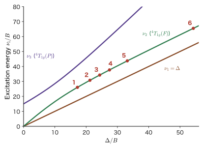
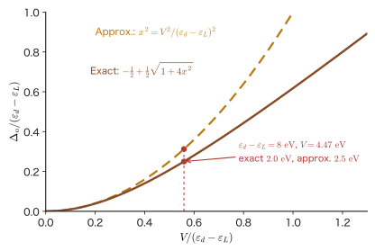

Chapter 48d–d Transitions and Color — Ruby and Emerald, and Ligand Field Theory
Ruby and emerald both contain the same chromium ion $\mathrm{Cr^{3+}}$, yet ruby looks red and emerald looks green. The host crystal is aluminum oxide $\mathrm{Al_2O_3}$ in ruby and beryl $\mathrm{Be_3Al_2Si_6O_{18}}$ in emerald; both are intrinsically colorless and transparent, and a very small amount of $\mathrm{Cr^{3+}}$ has been mixed into them. What has been added is the same, yet the colors are completely different. The difference lies in a gap of only about 10% in the strength of the ligand field felt by the 3d electrons of $\mathrm{Cr^{3+}}$ (whether $\Delta_o$ is about $18\,000\ \mathrm{cm^{-1}}$ or about $16\,000\ \mathrm{cm^{-1}}$). This small difference shifts the wavelengths at which light is absorbed, and as a result the color of the transmitted light that reaches the eye changes from red to green.
In Part VIII we have learned that the $d$ orbitals of a transition-metal ion split into $t_{2g}$ and $e_g$ in a crystal (Chapter 44), how to gain insight into that splitting with group theory (Chapter 45), the rules for putting electrons into the orbitals together with high spin and low spin (Chapter 46), and many-electron terms and Tanabe–Sugano diagrams (Chapter 47). In this chapter we see how all of these appear as the visible phenomenon of “color.” Light is absorbed as photons whose energy is exactly equal to the spacing between levels. In classical physics (the spectrum of electromagnetic waves in Introductory University Physics, Chapter 42, Section 42.6 (in Japanese)), light is a continuous wave, and the wavelengths that a material absorbs are determined by the natural frequency of a resonating oscillator. In quantum mechanics, too, the frequency of the absorbed light is determined by the spacing between levels; in this respect the two pictures are the same. However, which transitions are strong and which are weak (or forbidden) is not determined by the classical idea of resonance; it is determined by the selection rules, which follow from symmetry and spin. This is where the decisive difference lies.
The first half of this chapter (Sections 48.1–48.4) is the part in which we read the phenomena in numbers. It deals with the scales of absorption intensity (the molar absorption coefficient $\varepsilon$ and the oscillator strength $f$), the three selection rules (spin, Laporte, and vibronic coupling) and charge-transfer transitions, the determination of $\Delta_o$ and the Racah parameter $B$ from the spectra of hydrated ions, and then the difference in color between ruby and emerald, the ruby laser, alexandrite, and Ti:sapphire. The second half (Sections 48.5–48.6) completes the theory. The spectrochemical series and the decrease of $B$, which the point-charge model (Chapter 43, Chapter 44) could not explain, are revisited in terms of the molecular orbitals of the metal and the ligands (Chapter 39, Chapter 40) and gathered into ligand field theory, and we describe its relation to DFT and DFT+$U$. Finally we look back on the whole of Part VIII and show how $t_{2g}$ and $e_g$ are used in perovskites, spinels, rock-salt-type oxides, and layered oxides. Note that the general theory of light absorption (Fermi's golden rule, the electric dipole approximation, and the derivation of the selection rules) is derived in Part IX (Chapter 51, Chapter 52), so in this chapter we use its results and put in forward links where needed.
- The relation between the absorbed color and the color we see (complementary colors); the Beer–Lambert law $A=\varepsilon cl$; the molar absorption coefficient $\varepsilon$; the oscillator strength $f\simeq4.32\times10^{-9}\int\varepsilon\,\dd\tilde{\nu}$; and the conversion among the wavelength, wavenumber ($25\,000$–$14\,286\ \mathrm{cm^{-1}}$), and energy of visible light
- Why the three selection rules (spin, Laporte, and vibronic coupling) make d–d transitions weak. The temperature dependence of the integrated intensity due to vibronic coupling, $f(T)\propto\coth(\hbar\omega/2k_{\mathrm B}T)$ (the peak $\varepsilon$ grows more slowly than this); why tetrahedral complexes are more intensely colored than octahedral complexes (the $xyz$ term with $k=3$); and charge-transfer transitions (LMCT, MLCT, IVCT)
- The colors and spectra of hydrated ions. Reading $\Delta_o$ directly from $d^1$; determining $\Delta$ and $B$ for $d^3$ and $d^8$ from the absorption bands $\nu_1=\Delta$, $\nu_{2,3}=\tfrac12\bigl[15B+3\Delta\mp\sqrt{225B^2-18B\Delta+\Delta^2}\bigr]$. Pigments such as cobalt blue
- A quantitative explanation of the difference in color between ruby ($\Delta\approx18\,000\ \mathrm{cm^{-1}}$, $B=655\ \mathrm{cm^{-1}}$) and emerald ($\Delta\approx16\,000\ \mathrm{cm^{-1}}$). The ruby laser ($694.3$ nm, the difference of $29\ \mathrm{cm^{-1}}$ between $\mathrm R_1$ and $\mathrm R_2$), alexandrite, Ti:sapphire, and the increase of $\Delta$ with pressure
- Ligand field theory: the molecular orbital diagram with $\sigma$ bonding only (bonding $a_{1g}$, $e_g$, $t_{1u}$, nonbonding $t_{2g}$, antibonding $e_g^*$), $\Delta_o=E(e_g^*)-E(t_{2g})$, the two-level model, $\pi$ donation and $\pi$ acceptance and the spectrochemical series, the nephelauxetic effect (electron-cloud expansion), and the relation to DFT and DFT+$U$
- Summary of Part VIII: $t_{2g}$ and $e_g$ in materials ($\mathrm{SrTiO_3}$, $\mathrm{LaMnO_3}$, $\mathrm{NiO}$, $\mathrm{LiCoO_2}$, $\mathrm{Fe_3O_4}$), and an overview of the main equations
Source notes: This chapter supplements material that is not in the original notes. Related notes: Yasuhide Mochizuki, “Physics Notes: Quantum Mechanics 3,” pp. 65–68 (ligand field theory).
48.1 Light Absorption and Color — Complementary Colors, the Beer–Lambert Law, and Oscillator Strength
48.1.1 The color of a substance is the color of the “light that remains unabsorbed”
Sunlight and the light of an incandescent lamp are “white light,” a mixture of light of many different wavelengths. When this light passes through a substance (or is reflected by it) and the substance absorbs light of certain wavelengths, the remaining light reaches the eye. The color we see is not the color that was absorbed but the mixture of the colors that were not absorbed. For example, if a substance that absorbs only red light is illuminated with white light, the remaining blue and green light mix, and the substance looks blue-green. The absorbed color and the color that consequently appears form a pair called complementary colors.
In quantum mechanics, a substance absorbs light when the energy $h\nu$ of one photon is exactly equal to the spacing $E_f-E_i$ between two levels of the substance (Bohr's frequency condition; Chapter 5). In transition-metal complexes and oxides, the $d$ orbitals are split by the ligand field into $t_{2g}$ and $e_g$, and so on (Chapter 44), and the spacing $\Delta_o$ is about $1$–$3$ eV. This is of the same magnitude as the energy of a visible-light photon, so a d–d transition such as $t_{2g}\to e_g$ absorbs visible light, and the substance becomes colored.
In spectroscopy, the energy of a photon is often expressed not by the wavelength $\lambda$ but by the wavenumber $\tilde{\nu}=1/\lambda$, with $\mathrm{cm^{-1}}$ as the unit. Since the photon energy is $E=h\nu=hc/\lambda=hc\tilde{\nu}$, the wavenumber is proportional to the energy. The conversions, as given in the table in Chapter 44, Section 44.4, are $1\ \mathrm{cm^{-1}}=1.23984\times10^{-4}\ \mathrm{eV}$ and $\lambda\,[\mathrm{nm}]=10^7/\tilde{\nu}\,[\mathrm{cm^{-1}}]$. Visible light (wavelengths $400$–$700$ nm) corresponds to $25\,000$–$14\,286\ \mathrm{cm^{-1}}$ in wavenumber and to $3.10$–$1.77$ eV in photon energy (the lower band of Figure 48.1). For the position of visible light among electromagnetic waves as a whole, see Introductory University Physics, Section 42.6 (in Japanese).
| Absorbed wavelength range [nm] | Wavenumber [$\mathrm{cm^{-1}}$] | Photon energy [eV] | Absorbed color | Color seen (complementary) |
|---|---|---|---|---|
| $400$–$435$ | $25\,000$–$22\,989$ | $3.10$–$2.85$ | violet | yellow-green |
| $435$–$480$ | $22\,989$–$20\,833$ | $2.85$–$2.58$ | blue | yellow |
| $480$–$490$ | $20\,833$–$20\,408$ | $2.58$–$2.53$ | greenish blue | orange |
| $490$–$500$ | $20\,408$–$20\,000$ | $2.53$–$2.48$ | blue-green | red |
| $500$–$560$ | $20\,000$–$17\,857$ | $2.48$–$2.21$ | green | reddish purple |
| $560$–$580$ | $17\,857$–$17\,241$ | $2.21$–$2.14$ | yellow-green | violet |
| $580$–$595$ | $17\,241$–$16\,807$ | $2.14$–$2.08$ | yellow | blue |
| $595$–$605$ | $16\,807$–$16\,529$ | $2.08$–$2.05$ | orange | greenish blue |
| $605$–$700$ | $16\,529$–$14\,286$ | $2.05$–$1.77$ | red | blue-green |
Caution: Complementary colors are only a “rough guide”; the color seen is determined by the combination of absorption bands
Table 48.1 is a guide for the case in which the absorption lies in only a single narrow wavelength range. Real substances have two or more absorption bands, and moreover the bands are broad, with both tails extending into other colors as well. The color seen is determined by the overall combination of the transmitted light. For example, a substance that absorbs both yellow and violet looks like a purplish blue (blue-violet), because the remaining blue and red light mix. The human eye captures color with three types of cells that respond to red, green, and blue, so there are countless combinations of light that look the same color. In addition, the color seen also depends on the color of the light source (the color differs between daylight and incandescent light), on the thickness of the substance, and on its concentration. Later, in Section 48.4, we will see an example in which the color of alexandrite changes with the light source.
48.1.2 The Beer–Lambert law and the molar absorption coefficient
The “strength” of absorption is measured by how much the light is weakened as it passes through a substance. Let us start with the case in which light enters a thin layer. Light of intensity $I$ enters a solution containing $n$ absorbing molecules per unit volume. Consider a thin layer of thickness $\dd x$ and the effective area with which one molecule blocks the light (the absorption cross section $\sigma_{\mathrm{abs}}$, in units of $\mathrm{cm^2}$; the subscript abs is added to distinguish it from the $\sigma$ of a $\sigma$ orbital). The number of molecules in a layer of area $S$ is $nS\,\dd x$ and the blocked area is $\sigma_{\mathrm{abs}}nS\,\dd x$, so the fraction of the light that is absorbed equals the area ratio $\sigma_{\mathrm{abs}}n\,\dd x$:
$$ -\frac{\dd I}{I}=\sigma_{\mathrm{abs}}\,n\,\dd x $$Integrating both sides, the intensity after passing through an optical path length $l$ is $I=I_0\,e^{-\sigma_{\mathrm{abs}}nl}$ ($I_0$ is the intensity of the incident light and $e$ is Napier's number). In chemical spectroscopy, the absorbance is defined with a base-10 logarithm.
Definition 48.1: Absorbance and molar absorption coefficient
For incident light of intensity $I_0$ and transmitted light of intensity $I$, we define the transmittance $T=I/I_0$ and the absorbance $A=\log_{10}(I_0/I)=-\log_{10}T$. Let the molar concentration of the absorbing substance be $c\ [\mathrm{mol/L}]$ and the optical path length be $l\ [\mathrm{cm}]$. Then
\begin{equation} A=\varepsilon\,c\,l,\qquad T=10^{-A}=10^{-\varepsilon cl} \label{eq:48-beer} \end{equation}Here the proportionality coefficient $\varepsilon$ determined by this relation is called the molar absorption coefficient, and its unit is $\mathrm{L\,mol^{-1}\,cm^{-1}}$. Eq. \eqref{eq:48-beer} is called the Beer–Lambert law.
Let us find the relation to the absorption cross section. Here $c$ is the molar concentration, a quantity different from the speed of light in vacuum $c$ (which appears in Section 48.1.3). Comparing $I=I_0e^{-\sigma_{\mathrm{abs}}nl}$ with $I=I_010^{-\varepsilon cl}$ gives $\sigma_{\mathrm{abs}}nl=\varepsilon cl\ln10$. Since $1\ \mathrm{L}=10^3\ \mathrm{cm^3}$, the number density of molecules in a solution of concentration $c\ [\mathrm{mol/L}]$ is $n=cN_{\mathrm A}/1000\ \mathrm{cm^{-3}}$ ($N_{\mathrm A}$ is the Avogadro constant), and we obtain
\begin{equation} \sigma_{\mathrm{abs}}=\frac{1000\ln10}{N_{\mathrm A}}\,\varepsilon=3.82\times10^{-21}\,\varepsilon\ \ \mathrm{cm^2} \label{eq:48-sigma} \end{equation}For $\varepsilon=10$, $\sigma_{\mathrm{abs}}=3.8\times10^{-20}\ \mathrm{cm^2}$. Compared with the size of a molecule (a cross-sectional area of roughly $(5\ \text{Å})^2=2.5\times10^{-15}\ \mathrm{cm^2}$), this is only about $10^{-5}$ of it. That is, in a $d$–$d$ transition only a tiny fraction of the photons striking a molecule are absorbed.
Example 48.1: Transmittance of a $[\mathrm{Ti(H_2O)_6}]^{3+}$ solution
An aqueous solution of $[\mathrm{Ti(H_2O)_6}]^{3+}$ ($d^1$) has an absorption band at wavenumber $20\,300\ \mathrm{cm^{-1}}$, with $\varepsilon$ of about $5\ \mathrm{L\,mol^{-1}\,cm^{-1}}$ (use this as an assumed value). Find the absorbance $A$ and the transmittance $T$ in a cell with concentration $c=0.10\ \mathrm{mol/L}$ and optical path length $l=1\ \mathrm{cm}$. Also find the wavelength and energy of this absorption band and the absorption cross section $\sigma_{\mathrm{abs}}$.
Solution. From Eq. \eqref{eq:48-beer}, $A=\varepsilon cl=5\times0.10\times1=0.50$. The transmittance is $T=10^{-0.50}=0.316$, that is, $31.6\%$. About $68\%$ of the incident light is absorbed at this wavelength.
The wavelength is $\lambda=10^7/20\,300=492.6$ nm (blue-green light; the “blue-green” row of Table 48.1). The energy is $20\,300\times1.23984\times10^{-4}\ \mathrm{eV}=2.517$ eV. From Eq. \eqref{eq:48-sigma}, the absorption cross section is $\sigma_{\mathrm{abs}}=3.82\times10^{-21}\times5=1.9\times10^{-20}\ \mathrm{cm^2}$. This band is broad (about $4\,000$–$5\,000\ \mathrm{cm^{-1}}$ wide) and absorbs light from blue to yellow-green, so the remaining red and violet mix, and the solution of $[\mathrm{Ti(H_2O)_6}]^{3+}$ looks violet.
48.1.3 A “yardstick” for the strength of absorption — the oscillator strength
An absorption band has the shape of a peak with some width. To express the overall strength of a band with a single number, we use $\int\varepsilon\,\dd\tilde{\nu}$, the integral of $\varepsilon$ over wavenumber. This quantity, made dimensionless so as to connect with theory, is the oscillator strength $f$. The idea is the same as in classical physics: we first take as the reference the case in which “one electron, tied to the nucleus by a spring, absorbs light as a classical harmonic oscillator” (the Lorentz model). Integrating the absorption cross section of one such classical oscillator over frequency gives
$$ \int\sigma_{\mathrm{abs}}\,\dd\nu=\frac{e_0^2}{4\varepsilon_0m_{\mathrm e}c} $$Here (in SI units) $e_0$ is the elementary charge, $\varepsilon_0$ is the vacuum permittivity, $m_{\mathrm e}$ is the electron mass, and $c$ is the speed of light in vacuum. This reference value is the resonance absorption cross section of a classical electron oscillator integrated over all frequencies, and it does not depend on the natural frequency of the oscillator (we rederive it quantum-mechanically in Chapter 52). The quantity $f$ expresses how many times this reference value the integrated value of an actual transition is. In the form integrated over wavenumber, using $r_{\mathrm e}=e_0^2/(4\pi\varepsilon_0m_{\mathrm e}c^2)=2.818\times10^{-13}\ \mathrm{cm}$ (the classical electron radius), it can be written as
$$ \int\sigma_{\mathrm{abs}}\,\dd\tilde{\nu}=f\,\pi r_{\mathrm e} $$Substituting $\sigma_{\mathrm{abs}}=3.824\times10^{-21}\,\varepsilon\ \mathrm{cm^2}$ from Eq. \eqref{eq:48-sigma} gives
$$ f=\frac{1}{\pi r_{\mathrm e}}\int\sigma_{\mathrm{abs}}\,\dd\tilde{\nu}=\frac{3.824\times10^{-21}\ \mathrm{cm^2}}{\pi\times2.818\times10^{-13}\ \mathrm{cm}}\int\varepsilon\,\dd\tilde{\nu}=4.32\times10^{-9}\int\varepsilon\,\dd\tilde{\nu} $$and we obtain the following practical formula.
Formula 48.1: Oscillator strength and molar absorption coefficient
\begin{equation} f=\frac{1000\ln10}{\pi N_{\mathrm A}r_{\mathrm e}}\int\varepsilon(\tilde{\nu})\,\dd\tilde{\nu}\simeq4.32\times10^{-9}\int\varepsilon(\tilde{\nu})\,\dd\tilde{\nu} \label{eq:48-f} \end{equation}Here $\varepsilon$ is measured in $\mathrm{L\,mol^{-1}\,cm^{-1}}$, $\tilde{\nu}$ in $\mathrm{cm^{-1}}$, and $r_{\mathrm e}$ in $\mathrm{cm}$ (the coefficient $4.32\times10^{-9}$ has the dimension $\mathrm{mol\,cm^2\,L^{-1}}$). The sum of $f$ over all transitions per electron is 1 (the Thomas–Reiche–Kuhn sum rule; for an atom of atomic number $Z$, the sum equals the number of electrons).
If the absorption band is Gaussian ($\varepsilon(\tilde{\nu})=\varepsilon_{\max}\exp[-(\tilde{\nu}-\tilde{\nu}_0)^2/2s^2]$, with full width at half maximum $\Delta\tilde{\nu}_{1/2}=2\sqrt{2\ln2}\,s$), the integral is $\int\varepsilon\,\dd\tilde{\nu}=\sqrt{2\pi}\,s\,\varepsilon_{\max}=\tfrac12\sqrt{\pi/\ln2}\;\varepsilon_{\max}\Delta\tilde{\nu}_{1/2}=1.0645\,\varepsilon_{\max}\Delta\tilde{\nu}_{1/2}$.
Example 48.2: Oscillator strength of a d–d transition
Take the d–d band of an octahedral complex to be Gaussian with $\varepsilon_{\max}=10$ and full width at half maximum $3\,000\ \mathrm{cm^{-1}}$. Find the integral $\int\varepsilon\,\dd\tilde{\nu}$ and $f$, and compare with $f\sim1$ for an allowed transition. Also, what is $\varepsilon_{\max}$ for a band with $f=1$ (full width at half maximum $3\,000\ \mathrm{cm^{-1}}$)?
Solution. $\int\varepsilon\,\dd\tilde{\nu}=1.0645\times10\times3000=3.19\times10^{4}\ \mathrm{L\,mol^{-1}\,cm^{-2}}$. From Eq. \eqref{eq:48-f}, $f=4.32\times10^{-9}\times3.19\times10^4=1.38\times10^{-4}$. This is about $10^{-4}$ of the value for an allowed transition ($f\sim1$).
Conversely, $\varepsilon_{\max}$ for $f=1$ is obtained by dividing $\int\varepsilon\,\dd\tilde{\nu}=1/(4.32\times10^{-9})=2.31\times10^8$ by $1.0645\times3000$, which gives $\varepsilon_{\max}=7.2\times10^4\ \mathrm{L\,mol^{-1}\,cm^{-1}}$. This value is of the same order of magnitude as the upper bound for charge-transfer transitions (about $10^5$). In other words, charge-transfer transitions are “almost fully allowed” transitions, whereas d–d transitions are “nearly forbidden” transitions with only $10^{-4}$–$10^{-3}$ times that strength (Figure 48.3).
Intuition: What fraction of the “light-absorbing capacity of one electron” does $f$ use?
$f$ is directly connected to theory through the matrix element of the transition. In the general theory of light absorption (Part IX), it is shown that in the electric dipole approximation the strength of a transition is proportional to $\lvert\mel{f}{\hat{\bm{r}}}{i}\rvert^2$, and that averaging over degeneracy and orientation gives $f=\dfrac{2m_{\mathrm e}\omega_{fi}}{3\hbar}\,\lvert\mel{f}{\hat{\bm{r}}}{i}\rvert^2$ ($\omega_{fi}=(E_f-E_i)/\hbar$; the degenerate components of the final state are summed). For example, for the $1s\to2p$ transition of the hydrogen atom (Lyman $\alpha$), $f=0.416$, a typical allowed transition. In a d–d transition, on the other hand, $\mel{d}{\hat{\bm{r}}}{d}$ should vanish exactly (because the odd-parity operator $\hat{\bm{r}}$ is sandwiched between even-parity states), but a slight admixture of odd parity rescues it from vanishing. That is the reason for $f\sim10^{-4}$ (Section 48.2). We derive this general theory in Chapter 51 (time-dependent perturbation theory and Fermi's golden rule) and Chapter 52 (the electric dipole approximation and selection rules).
Application: Measuring the color of powders and sintered bodies—diffuse reflectance spectra and $d$–$d$ absorption
For opaque powders that do not transmit light, such as ceramics or pigments, the transmittance $T$ cannot be measured. Instead, one measures the fraction of light that is diffused at the surface of the powder and returns (the reflectance $R$), and uses the Kubelka–Munk function $F(R)=(1-R)^2/(2R)$ as a quantity proportional to the absorption coefficient. When $F(R)$ is plotted against wavelength (or wavenumber), the absorption bands of $d$–$d$ transitions, charge-transfer bands, and the absorption edge of the band gap can be read off, just as in the absorption spectrum of a solution. It is the basic measurement method when designing the color of a material.
48.2 Selection Rules — Spin, Laporte, Vibronic Coupling, and Charge Transfer
48.2.1 Why are d–d transitions “weak”? — Three filters
The d–d absorption of transition-metal complexes has $\varepsilon$ of only about $1$–$100$, which is much paler than that of organic dyes ($\varepsilon\sim10^4$–$10^5$). The reason ruby is “red yet transparent” is also that the absorption of $\mathrm{Cr^{3+}}$ is this weak. The cause of the weakness can be explained by the following three filters (selection rules). According to the general theory of the absorption of light (Part IX), the intensity of a transition from an initial state $\ket{i}$ to a final state $\ket{f}$ is proportional to the square of the absolute value of the electric dipole matrix element $\mel{f}{-e_0\hat{\bm{r}}}{i}$ (the electric dipole approximation; derived in Chapter 52). A transition for which this matrix element is 0 is called “forbidden,” and one for which it is not 0 is called “allowed.” The first filter is spin, and the second filter is spatial symmetry (parity).
Law 48.1: Spin selection rule
In an electric dipole transition, the total spin $S$ does not change: $\Delta S=0$.
Reason. The dipole operator $\hat{\bm{r}}$ acts only on the position of the electron and does not act on the spin. If we write the many-electron wave function as a product of a spatial part and a spin part, $\Psi=\Psi_{\mathrm{orb}}\,\chi_{S,M_S}$ (Chapter 34), the matrix element becomes $\mel{\Psi_f}{\hat{\bm{r}}}{\Psi_i}=\mel{\Psi_{\mathrm{orb},f}}{\hat{\bm{r}}}{\Psi_{\mathrm{orb},i}}\cdot\braket{\chi_{S_f,M_f}}{\chi_{S_i,M_i}}$, and the inner product of the spin parts is $\delta_{S_fS_i}\delta_{M_fM_i}$ (different spin states are orthogonal). Therefore the matrix element is 0 whenever $S_f\ne S_i$.
However, the spin–orbit interaction $\lambda\hat{\bm{L}}\cdot\hat{\bm{S}}$ (Chapter 26) slightly mixes states with different $S$. The mixing fraction (amplitude) is about $\lambda/\Delta E$; for $3d$ transition metals $\lambda\sim10^2\ \mathrm{cm^{-1}}$ and $\Delta E\sim10^4\ \mathrm{cm^{-1}}$, so it is about $10^{-2}$, and the intensity, which is its square, drops to about $10^{-4}$. In this way “spin-forbidden” transitions remain as weak absorptions with $\varepsilon\sim10^{-2}$–$1$. This mechanism of “borrowing intensity” is the source of the intensity of the R lines of ruby (Section 48.4).
Intuition: Why is high-spin $d^5$ “almost colorless”?
In high-spin $d^5$ ($\mathrm{Mn^{2+}}$, $\mathrm{Fe^{3+}}$), five electrons fill $t_{2g}^3e_g^2$ with parallel spins (Chapter 46). The ground state is the sextet ${}^6A_{1g}$ with $S=5/2$, and all excited states of $d^5$ have $S\le3/2$ (quartets and doublets). In other words, every d–d transition out of the ground state must change the direction of the spin, so all of them are spin-forbidden. The $\varepsilon$ of $[\mathrm{Mn(H_2O)_6}]^{2+}$ is only about $10^{-2}$, and the aqueous solution looks very pale pink, almost colorless. Since Laporte-forbiddenness also applies (below), $\varepsilon$ is as small as $10^{-2}$–$10^{-1}$, which is as little as 1/100 to 1/1000 of the value for other d–d transitions.
Law 48.2: Laporte rule
In an environment with an inversion center (octahedral $O_h$, for example), electric dipole transitions between states of the same parity ($g\leftrightarrow g$ or $u\leftrightarrow u$), where parity means evenness or oddness under the inversion $\bm{r}\to-\bm{r}$, are forbidden. Only transitions between states of different parity ($g\leftrightarrow u$) are allowed.
Derivation
Consider the inversion operator $\hat{\Pi}$ ($\hat{\Pi}f(\bm{r})=f(-\bm{r})$). We have $\hat{\Pi}\hat{\bm{r}}\hat{\Pi}^{-1}=-\hat{\bm{r}}$. If there is an inversion center, $\hat{\Pi}$ commutes with $\hat{H}$, so the states can be written $\hat{\Pi}\ket{i}=\pi_i\ket{i}$ and $\hat{\Pi}\ket{f}=\pi_f\ket{f}$ ($\pi=\pm1$; $+1$ is $g$ and $-1$ is $u$). Using the fact that $\hat{\Pi}$ is unitary, so that $\hat{\Pi}^{-1}=\hat{\Pi}^\dagger$, we obtain
$$ \mel{f}{\hat{\bm{r}}}{i}=\mel{f}{\hat{\Pi}^{\dagger}\bigl(\hat{\Pi}\hat{\bm{r}}\hat{\Pi}^{-1}\bigr)\hat{\Pi}}{i}=\pi_f\,\pi_i\,(-1)\,\mel{f}{\hat{\bm{r}}}{i} $$If $\pi_f\pi_i=+1$ (the same parity), then $\mel{f}{\hat{\bm{r}}}{i}=-\mel{f}{\hat{\bm{r}}}{i}$, so the matrix element is 0. ∎
In the language of group theory, for the matrix element $\mel{f}{x}{i}$ (and likewise for $y$ and $z$) to be nonzero, the direct product $\Gamma_f\otimes\Gamma_x\otimes\Gamma_i$ must contain the totally symmetric representation $A_{1g}$ (stated in general in Chapter 45, Section 45.8). In $O_h$, $x,y,z$ transform as $T_{1u}$. Since $T_{1u}$ is $u$ (it changes sign under inversion), for $\Gamma_f\otimes T_{1u}\otimes\Gamma_i\ni A_{1g}$ to hold, $\Gamma_f\otimes\Gamma_i$ must be $u$, so the parities of $\Gamma_f$ and $\Gamma_i$ must differ. The d orbitals are even ($g$), and every state built from d orbitals alone is $g$, so a d–d transition is $g\leftrightarrow g$ and is forbidden. In atomic language, this corresponds to the rule $\Delta l=\pm1$ (d → p and s → p are allowed; d → d has $\Delta l=0$ and is forbidden).
Example 48.3: Checking the Laporte rule with direct products (octahedral and tetrahedral)
(a) Using direct products, confirm that the absorption ${}^4A_{2g}\to{}^4T_{2g}$ of $d^3$ in the octahedral $O_h$ environment (for example, ruby) is Laporte-forbidden. (b) For a $d^7$ complex (for example, $[\mathrm{CoCl_4}]^{2-}$) in a tetrahedral $T_d$ environment, which has no inversion center ($x,y,z$ transform as $T_2$), which of ${}^4A_2\to{}^4T_2$ and ${}^4A_2\to{}^4T_1$ is allowed from symmetry alone?
Solution. (a) Multiplying the $O_h$ direct product $T_{2g}\otimes T_{1u}=A_{2u}+E_u+T_{1u}+T_{2u}$ by $A_{2g}$, we have $A_{2g}\otimes A_{2u}=A_{1u}$, $A_{2g}\otimes E_u=E_u$, $A_{2g}\otimes T_{1u}=T_{2u}$, and $A_{2g}\otimes T_{2u}=T_{1u}$, so the result is $A_{1u}+E_u+T_{2u}+T_{1u}$, which does not contain $A_{1g}$ (all are $u$). Therefore the transition is forbidden.
(b) The direct products of $T_d$ are $T_2\otimes T_2=A_1+E+T_1+T_2$, $T_1\otimes T_2=A_2+E+T_1+T_2$, $A_2\otimes A_1=A_2$, $A_2\otimes E=E$, $A_2\otimes T_1=T_2$, and $A_2\otimes T_2=T_1$. For ${}^4A_2\to{}^4T_2$, $A_2\otimes T_2\otimes T_2=A_2\otimes(A_1+E+T_1+T_2)=A_2+E+T_2+T_1$, which does not contain $A_1$. The transition remains forbidden. For ${}^4A_2\to{}^4T_1$, $A_2\otimes T_2\otimes T_1=A_2\otimes(A_2+E+T_1+T_2)=A_1+E+T_2+T_1$, which contains $A_1$. As far as symmetry is concerned, it is allowed.
However, even in a tetrahedron, $\mel{d}{\hat{\bm{r}}}{d}$ between states built from d orbitals alone is 0 because of the parity of the atom ($\Delta l=0$). For a transition to become allowed in practice, odd-parity components must be mixed in. That mechanism is the $xyz$ term in Section 48.2.3.
48.2.2 Vibronic coupling — vibrations that rescue a forbidden transition
Why are d–d transitions actually seen even in Laporte-forbidden octahedral complexes? A complex is not at rest. The ligands around the metal ion are constantly vibrating, and some of these vibrations destroy the inversion symmetry. For example, at the instant of a displacement in which the ligands of $\mathrm{ML_6}$ approach on the $+x$ side and recede on the $-x$ side (a $t_{1u}$ vibrational mode), there is no inversion center. Then, at that instant, the $d$ orbitals mix with odd-parity orbitals (the metal's $4p$ or ligand orbitals), and the Laporte prohibition is broken slightly. Because it arises from the combination of the motion of the electrons and the vibration of the nuclei, it is called vibronic coupling or the Herzberg–Teller mechanism.
Let us estimate this mixing by perturbation theory (Chapter 27). Let $Q$ be the normal coordinate of the odd-parity mode. The potential of the ligand field is a function of $Q$, and expanding it about $Q=0$ gives $\hat{V}(\bm{r},Q)=\hat{V}_0+Q\,(\partial\hat{V}/\partial Q)_0+\cdots$. The second term $Q\,(\partial\hat{V}/\partial Q)_0$ is an odd-parity perturbation, and according to first-order perturbation theory, the $d$ state $\ket{d}$ contains the odd-parity states $\ket{p}$ as follows:
$$ \ket{d'}=\ket{d}+\sum_{p}c_p\ket{p},\qquad c_p=Q\,\frac{\mel{p}{(\partial\hat{V}/\partial Q)_0}{d}}{E_d-E_p} $$The dipole of the transition to the final state $\ket{d''}$ is $\mel{d''}{\hat{\bm{r}}}{d'}\simeq\sum_pc_p\mel{d''}{\hat{\bm{r}}}{p}+\cdots$, and its amplitude is proportional to $c_p$. That is, the intensity of the transition (the square of the amplitude) is proportional to $Q^2$. (Here we have written only the admixture into the initial state, but odd-parity components are also admixed into the final state, and that contribution is also proportional to $Q$. Even when the two are added, the amplitude is proportional to $Q$, so the conclusion does not change.)
The vibration is a quantized harmonic oscillator, and its $\langle Q^2\rangle$ at level $n$ is $\langle Q^2\rangle_n=(\hbar/\mu\omega)(n+\tfrac12)$ (Chapter 13; $\mu$ is the reduced mass of the mode and $\omega$ is the angular frequency). At temperature $T$, we average over the levels with the Bose distribution. The average quantum number is $\bar{n}=1/(e^{x}-1)$ with $x=\hbar\omega/k_{\mathrm B}T$, and we obtain
$$ \bar{n}+\frac12=\frac{1}{e^x-1}+\frac12=\frac{e^x+1}{2(e^x-1)}=\frac12\coth\frac{x}{2} $$Therefore the intensity of the $d$–$d$ absorption band (the integrated intensity, that is, $f$ or $\int\varepsilon\,\dd\tilde{\nu}$) has the following temperature dependence. This is the intensity of the band as a whole. A vibronic transition is accompanied by sidebands in which the vibrational quantum number changes by one, and the integrated intensity obtained by adding all of them is proportional to $\langle Q^2\rangle$. The band broadens with temperature (its width is proportional to $\sqrt{\coth}$), so the increase in the peak $\varepsilon$ is more gradual than this.
Formula 48.2: Temperature dependence of the intensity of a vibronic transition
\begin{equation} f(T)=f(0)\,\coth\frac{\hbar\omega}{2k_{\mathrm B}T} \label{eq:48-coth} \end{equation}$\hbar\omega$ is the energy of the odd-parity vibrational mode ($t_{1u}$ or $t_{2u}$ in $O_h$), and $f(0)$ is the value at $T\to0$. As $T\to0$, $f\to f(0)$ (a finite value due to the zero-point vibration), and at high temperatures, $k_{\mathrm B}T\gg\hbar\omega$, we have $\coth(x/2)\to2/x$, so $f\propto T$.

Example 48.4: Temperature change of the intensity of d–d absorption
Suppose that the d–d absorption of an octahedral complex gains its intensity from an odd-parity vibration with $\hbar\omega=200\ \mathrm{cm^{-1}}$ ($=24.8$ meV). Find $f(300\ \mathrm{K})/f(0)$ at $T=300$ K. Also, what multiple of the zero-temperature value is it at $77$ K, the temperature of liquid nitrogen?
Solution. Converting $k_{\mathrm B}T$ to a wavenumber, with $k_{\mathrm B}/(hc)=0.695\,04\ \mathrm{cm^{-1}/K}$, we have $k_{\mathrm B}T=208.5\ \mathrm{cm^{-1}}$ at $300$ K. Hence $x/2=\hbar\omega/2k_{\mathrm B}T=200/(2\times208.5)=0.480$, and $\coth(0.480)=1/\tanh(0.480)=1/0.4458=2.24$. That is, the intensity at 300 K is 2.24 times its value for $T\to0$. At $77$ K, $k_{\mathrm B}T=53.5\ \mathrm{cm^{-1}}$, $x/2=1.869$, and $\coth(1.869)=1.049$, which is only $5\%$ larger than the value for $T\to0$. In other words, when the sample is cooled by immersing it in liquid nitrogen, the integrated intensity of the d–d band falls to about $47\%$ ($1.049/2.24$) of its room-temperature value (the peak $\varepsilon$ falls by less than this). Such a temperature change of intensity is experimental evidence for the vibronic mechanism. Note also that the width of the absorption band likewise broadens with temperature in proportion to $\sqrt{\coth(\hbar\omega/2k_{\mathrm B}T)}$.
48.2.3 Why tetrahedral complexes are more deeply colored than octahedral complexes
Let us compare cobalt complexes. The octahedral $[\mathrm{Co(H_2O)_6}]^{2+}$ is pale pink ($\varepsilon\approx5$–$10$), but the tetrahedral $[\mathrm{CoCl_4}]^{2-}$ is deep blue, with $\varepsilon$ reaching several hundred. Although both are d–d transitions of the same $\mathrm{Co^{2+}}$, the intensities differ by a factor of several tens. The reason is that a tetrahedron has no inversion center.
If we expand the electrostatic potential created by the four ligands of a tetrahedron by the same procedure as in Chapter 44, Section 44.5, a $k=3$ term remains. With $a$ the distance to the ligands and $\Lambda=qe_0^2/4\pi\varepsilon_0$, this term is
\begin{equation} \hat{V}_3=\frac{20\sqrt3}{3}\,\Lambda\,\frac{xyz}{a^4} \label{eq:48-V3} \end{equation}In an octahedron, the six ligands coincide with one another under inversion, so the $k=3$ terms cancel each other and vanish. In a tetrahedron, on the other hand, inversion carries the ligand positions to different positions (the four vertices are carried by inversion to the remaining four vertices of the cube), so no cancellation occurs, and an odd-function term $\hat{V}_3$ proportional to $xyz$ remains.
Since $\hat{V}_3$ has odd parity, it has no effect on the matrix elements between d orbitals of even parity (the d–d splitting); the d orbitals are not shifted by $\hat{V}_3$. It does, however, mix the d orbitals with p orbitals of odd parity. For example, since $d_{xy}\propto n_xn_y$ and $p_z\propto n_z$, the angular part of the matrix element between $d_{xy}$ and $p_z$ is
$$ \int n_z\,(n_xn_yn_z)\,(n_xn_y)\,\dd\Omega=\int n_x^2n_y^2n_z^2\,\dd\Omega=\frac{4\pi}{105}\ne0 $$which is not zero. Similarly, $d_{yz}$ mixes with $p_x$ and $d_{zx}$ with $p_y$ (the $t_2$ d orbitals mix with the $t_2$ p orbitals). If the mixing coefficient $c=\mel{4p}{\hat{V}_3}{3d}/(E_{3d}-E_{4p})$ is from a few percent to about 10%, a fraction $c^2\sim10^{-3}$–$10^{-2}$ of the intensity of the allowed transition of the p component ($f\sim0.1$–$1$) is shared with the d–d band. This corresponds to $f\sim10^{-3}$–$10^{-2}$, that is, $\varepsilon\sim10^2$–$10^3$. It is about one order of magnitude larger than the intensity from the vibronic mechanism in an octahedron ($f\sim10^{-4}$, Example 48.2), and it agrees with experiment. Covalent bonding, in which components of the ligand orbitals mix into the metal d orbitals (Section 48.5), also adds odd-parity components just as $\hat{V}_3$ does, and so increases the intensity further.
Example 48.5: Comparing the color depth of octahedral and tetrahedral cobalt complexes
Find the absorbance and the transmittance of $[\mathrm{Co(H_2O)_6}]^{2+}$ ($\varepsilon\approx8$, assumed) and $[\mathrm{CoCl_4}]^{2-}$ ($\varepsilon\approx600$, assumed) at $c=1.0\times10^{-3}\ \mathrm{mol/L}$ and $l=1\ \mathrm{cm}$, and state the ratio of their intensities.
Solution. From Eq. \eqref{eq:48-beer}, for the octahedral complex $A=8\times10^{-3}\times1=0.0080$ and $T=10^{-0.008}=0.982$ (transmittance $98.2\%$). For the tetrahedral complex, $A=600\times10^{-3}=0.60$ and $T=10^{-0.60}=0.251$ ($25.1\%$). The $\varepsilon$ of the tetrahedral complex is $600/8=75$ times that of the octahedral one. Even for solutions of the same concentration, the tetrahedral one absorbs 75% of the light, whereas the octahedral one absorbs only 2%, and almost no color can be seen.
| Type of transition | Spin | Laporte | Examples | Typical $\varepsilon$ |
|---|---|---|---|---|
| d–d (spin-forbidden; high-spin $d^5$, etc.) | forbidden | forbidden (weakly allowed by vibronic coupling) | $[\mathrm{Mn(H_2O)_6}]^{2+}$, the R line of ruby | $10^{-2}$–$1$ (high-spin $d^5$ at the lower end, $10^{-2}$–$10^{-1}$) |
| d–d (octahedral, spin-allowed) | allowed | forbidden (weakly allowed by vibronic coupling) | $[\mathrm{Ti(H_2O)_6}]^{3+}$, $[\mathrm{Cr(H_2O)_6}]^{3+}$, $[\mathrm{Ni(H_2O)_6}]^{2+}$ | $1$–$100$ |
| d–d (no inversion center) | allowed | allowed through admixture of odd parity | $[\mathrm{CoCl_4}]^{2-}$, $\mathrm{CoAl_2O_4}$ | $10^2$–$10^3$ |
| Charge transfer (LMCT, MLCT, IVCT) | allowed | allowed | $\mathrm{MnO_4^-}$, $[\mathrm{Ru(bpy)_3}]^{2+}$ | $10^3$–$10^5$ |
![Horizontal bar chart showing the range of the molar absorption coefficient for each type of transition on a logarithmic axis. The d–d transitions that are both spin-forbidden and Laporte-forbidden range from 10 to the power −2 up to 1, the d–d transitions of octahedral complexes from 1 to 100, the d–d transitions of tetrahedral complexes without an inversion center from 100 to 1000, and the charge-transfer transitions from 1000 to 100,000. The upper axis is the oscillator strength f, assuming a Gaussian band with a full width at half maximum of 3000 reciprocal centimeters. The position of f equal to 1 corresponds to an ε of about 70,000.](figs/ch48_fig48-3.svg)
48.2.4 Charge-transfer transitions — strong absorption that is both spin-allowed and Laporte-allowed
A d–d transition was “the movement of an electron within the orbitals.” In contrast, there are transitions in which an electron moves from the metal to the ligand (or from the ligand to the metal). This is called a charge-transfer transition. It is a transition between a ligand orbital and a metal d orbital. In an octahedral complex, the metal $d$ orbitals are $g$, but among the combinations of ligand orbitals there are $u$-type ones ($t_{1u}$, $t_{2u}$, etc.), and a $u\to g$ transition from the ligand to the metal is allowed by the Laporte rule (example: the LMCT of the octahedral $[\mathrm{IrCl_6}]^{2-}$). Note that $\mathrm{MnO_4^-}$ and $\mathrm{CrO_4^{2-}}$ in the examples below are tetrahedral and have no inversion center, so the Laporte rule does not apply to them in the first place. In either case, the transition is not forbidden by the Laporte rule, and if the spin does not change either, it is allowed. As a result, the absorption is strong, with $\varepsilon=10^3$–$10^5$.
Definition 48.2: Types of charge-transfer transitions
- LMCT (ligand-to-metal charge transfer): a transition from an occupied orbital that is mainly ligand in character to an empty (or half-empty) orbital that is mainly metal in character, $t_{2g}$ or $e_g^*$. It occurs at lower energy when the metal has a high oxidation state, the empty d levels are low, and the ligand is more easily oxidized (that is, has orbitals of higher energy).
- MLCT (metal-to-ligand charge transfer): a transition from an occupied $t_{2g}$ orbital of the metal to an empty $\pi^*$ orbital of the ligand. It occurs when the metal has a low oxidation state and the ligand is a $\pi$-acceptor ligand (bipy, phen, CO, $\mathrm{CN^-}$).
- IVCT (intervalence charge transfer): the transfer of an electron between metal ions of the same kind in different oxidation states ($\mathrm{M^{n+}}+\mathrm{M'^{m+}}\to\mathrm{M^{(n+1)+}}+\mathrm{M'^{(m-1)+}}$).
Let us give some representative examples. (i) The permanganate ion $\mathrm{MnO_4^-}$ (oxidation state of $\mathrm{Mn}$ $+7$, $d^0$) is deep purple. Since there are no $d$ electrons, there is no d–d transition, and the color comes from the LMCT $\mathrm{O}$ $2p\to\mathrm{Mn}$ $3d$. The absorption maximum is at about $525$ nm (green light is absorbed; in Table 48.1, green → reddish purple), and $\varepsilon$ is about $2\,400$. (ii) The chromate ion $\mathrm{CrO_4^{2-}}$ ($d^0$) is yellow and has an LMCT at about $372$ nm (violet to blue-violet) with $\varepsilon\approx4\,800$. The oxidation state of the metal is as high as $+6$, but because the ligand is oxygen, the LMCT lies at the boundary between the ultraviolet and the visible region. (iii) $[\mathrm{Ru(bpy)_3}]^{2+}$ (bpy is 2,2′-bipyridine) is orange, and the MLCT from the $t_{2g}$ of $\mathrm{Ru}$ to the $\pi^*$ of bpy appears at about $452$ nm with $\varepsilon\approx1.4\times10^4$. (iv) The deep blue of Prussian blue (with a composition such as $\mathrm{Fe_4[Fe(CN)_6]_3}$) is due to an IVCT in which an electron moves from $\mathrm{Fe^{2+}}$ (bonded to the carbon end of $\mathrm{CN^-}$) to $\mathrm{Fe^{3+}}$ (bonded to the nitrogen end). The absorption is at about $700$ nm (red-orange), and the complementary color, blue, is seen. (v) The blue of blue sapphire is due to an IVCT between neighboring $\mathrm{Fe^{2+}}$ and $\mathrm{Ti^{4+}}$ in $\mathrm{Al_2O_3}$ ($\mathrm{Fe^{2+}+Ti^{4+}\to Fe^{3+}+Ti^{3+}}$). Unlike the red of ruby, the blue of sapphire is caused not by a $d$–$d$ transition but by a charge-transfer transition (Section 48.4).
Application: The color of ionic crystals and semiconductors—absorption across the band gap
If we extend charge-transfer transitions to the limit in which, within a solid, the ligand orbitals form the valence band and the metal orbitals form the conduction band, we obtain optical absorption across the band gap (Chapter 41, Chapter 42). Light with energy greater than the gap $E_{\mathrm g}$ is all absorbed. Cadmium sulfide $\mathrm{CdS}$ ($E_{\mathrm g}\approx2.4$ eV, absorbing wavelengths shorter than $\lambda=517$ nm) is yellow; cinnabar $\mathrm{HgS}$ ($E_{\mathrm g}\approx2.0$ eV) and hematite $\alpha$-$\mathrm{Fe_2O_3}$ ($E_{\mathrm g}\approx2.1$ eV) are red; and $\mathrm{TiO_2}$ ($E_{\mathrm g}\approx3.0$–$3.2$ eV) and $\mathrm{ZnO}$ ($E_{\mathrm g}\approx3.3$ eV) do not absorb visible light and serve as white pigments. A point that differs from the color of d–d transitions is that the color is determined by the “absorption edge,” not by an “absorption band.”
48.3 Reading the Colors of Complexes — Determining $\Delta_o$ and $B$ from Absorption Spectra
48.3.1 Colors and spectra of hydrated ions
In this section we learn how to read off, from absorption spectra, the strength $\Delta$ of the ligand field and the magnitude $B$ of the electron–electron repulsion. From here on, following the Tanabe–Sugano convention, we write the positions of the absorption bands (wavenumbers) as $\nu_1,\nu_2,\nu_3$ (in order from the low-energy side). The unit is $\mathrm{cm^{-1}}$, and this is the same quantity as the wavenumber $\tilde{\nu}$ of the preceding sections (not to be confused with the frequency $\nu$ of light). First, let us look at the colors and absorption bands of the representative hydrated ions $[\mathrm{M(H_2O)_6}]^{n+}$ (Table 48.3). When the position of the metal (which group of the periodic table) differs, the number $n$ of $d$ electrons differs, and the ground term and the number of absorption bands change.
| Ion | $d^n$ | Ground term | Main absorption bands ($\mathrm{cm^{-1}}$) | Color |
|---|---|---|---|---|
| $[\mathrm{Ti(H_2O)_6}]^{3+}$ | $d^1$ | ${}^2T_{2g}$ | about $20\,300$ ($\varepsilon\approx5$) | violet |
| $[\mathrm{V(H_2O)_6}]^{3+}$ | $d^2$ | ${}^3T_{1g}$ | about $17\,200$, $25\,600$ | green |
| $[\mathrm{V(H_2O)_6}]^{2+}$ | $d^3$ | ${}^4A_{2g}$ | about $12\,400$, $18\,500$, $27\,800$ | violet |
| $[\mathrm{Cr(H_2O)_6}]^{3+}$ | $d^3$ | ${}^4A_{2g}$ | about $17\,400$, $24\,500$ | violet (with a bluish tint) |
| $[\mathrm{Mn(H_2O)_6}]^{2+}$ | $d^5$ | ${}^6A_{1g}$ | about $18\,900$, $23\,100$, $24\,900$ ($\varepsilon\lesssim0.04$) | nearly colorless (pale pink) |
| $[\mathrm{Fe(H_2O)_6}]^{3+}$ | $d^5$ | ${}^6A_{1g}$ | all spin-forbidden ($\varepsilon\lesssim0.1$) | pale violet (hydrolyzed complexes are yellow-brown) |
| $[\mathrm{Fe(H_2O)_6}]^{2+}$ | $d^6$ | ${}^5T_{2g}$ | about $10\,400$ | pale blue-green |
| $[\mathrm{Co(H_2O)_6}]^{2+}$ | $d^7$ | ${}^4T_{1g}$ | about $8\,100$, $19\,400$ (a weak band in between) | pink |
| $[\mathrm{Ni(H_2O)_6}]^{2+}$ | $d^8$ | ${}^3A_{2g}$ | about $8\,500$, $13\,800$, $25\,300$ | green |
| $[\mathrm{Cu(H_2O)_6}]^{2+}$ | $d^9$ | ${}^2E_g$ | about $12\,500$–$12\,600$ (broad; the maximum differs among sources; near 800 nm) | pale blue |
Let us read the colors using Table 48.1. For $[\mathrm{Ni(H_2O)_6}]^{2+}$, $\nu_2=13\,800\ \mathrm{cm^{-1}}$ ($725$ nm, red) and $\nu_3=25\,300\ \mathrm{cm^{-1}}$ ($395$ nm, violet) absorb red and violet, respectively, and the remaining light from blue through green to yellow mixes, so the ion looks green (the near-infrared $\nu_1$ does not contribute to the color). $[\mathrm{Co(H_2O)_6}]^{2+}$ weakly absorbs at $19\,400\ \mathrm{cm^{-1}}$ ($515$ nm, green) and looks like the complementary reddish purple (pink). $[\mathrm{Cu(H_2O)_6}]^{2+}$ absorbs from the near-infrared at $12\,500\ \mathrm{cm^{-1}}$ ($800$ nm) up to the tail of the visible red, and blue-green to blue remains. Because the transitions of $\mathrm{Mn^{2+}}$ ($d^5$) are spin-forbidden, the absorption is too weak and it is hardly colored at all (Section 48.2.1).
The $d^1$ case. Only one transition appears, in which one electron is promoted from $t_{2g}$ to $e_g$, so the position of the absorption band gives $\Delta_o$ almost directly. For $[\mathrm{Ti(H_2O)_6}]^{3+}$ the band is at about $20\,300\ \mathrm{cm^{-1}}$, and we find $\Delta_o\approx20\,300\ \mathrm{cm^{-1}}$ (the value in Table 44.4 of Chapter 44, Section 44.4). However, the excited state ${}^2E_g$ has orbital degeneracy and is slightly split by the Jahn–Teller effect (Section 44.6), so the absorption band has an asymmetric shape.
Question: Why is the $d^9$ absorption band a single band, and a broad one at that?
The $d^9$ configuration is a “one-hole” configuration obtained by removing one electron from $d^{10}$ (closed shell). There is only one transition, from the ground state ${}^2E_g$, in which the hole is in $e_g$, to the excited state ${}^2T_{2g}$, in which the hole has moved to $t_{2g}$, so there is a single absorption band. The ground state ${}^2E_g$ is strongly distorted by the Jahn–Teller effect (an elongated octahedron, Section 44.6), and ${}^2T_{2g}$ also splits. These multiple transitions overlap to form a single broad band. The color of $\mathrm{Cu^{2+}}$ complexes changes greatly with the ligand (from the pale blue of the hydrated ion to the deep blue-violet of the ammonia complex $[\mathrm{Cu(NH_3)_4(H_2O)_2}]^{2+}$; the absorption maximum moves from about $800$ nm to about $600$ nm) because the position of this band shifts with the strength of the ligand field.
48.3.2 Determining $\Delta$ and $B$ from the absorption bands of $d^3$ and $d^8$
When there are two or more electrons, the positions of the absorption bands depend not only on $\Delta$ but also on the Racah parameter $B$, which expresses the electron–electron repulsion (Chapter 47). The cases that can be solved most cleanly are the octahedral $d^3$ (ground state ${}^4A_{2g}$; $\mathrm{Cr^{3+}}$, $\mathrm{V^{2+}}$) and $d^8$ (ground state ${}^3A_{2g}$; $\mathrm{Ni^{2+}}$). In these cases three spin-allowed absorption bands appear, as transitions from the ground state to ${}^4T_{2g}$, ${}^4T_{1g}(F)$, and ${}^4T_{1g}(P)$ (for $d^8$, to ${}^3T_{2g}$, ${}^3T_{1g}(F)$, and ${}^3T_{1g}(P)$). As we derived in Chapter 47, the excitation energy of ${}^4T_{2g}$ is equal to $\Delta$, and the two ${}^4T_{1g}$ states, which have the same symmetry, mix with each other, and their excitation energies are given as the eigenvalues of the $2\times2$ matrix
$$ \begin{pmatrix}18Dq&4Dq\\4Dq&15B+12Dq\end{pmatrix},\qquad Dq=\frac{\Delta}{10} $$(The ground state ${}^4A_{2g}$ is taken as the reference; the upper left entry is ${}^4T_{1g}(F)$ and the lower right entry is ${}^4T_{1g}(P)$.) Solving for the eigenvalues gives the following result.
Formula 48.3: The three absorption bands of $d^3$ and $d^8$ (octahedral)
($\Delta\equiv\Delta_o$. For $d^7$ and $d^2$ in a tetrahedral field, substitute $\Delta_t$. $\nu_i$ is a wavenumber [$\mathrm{cm^{-1}}$].)
\begin{equation} \nu_1=\Delta,\qquad \nu_{2,3}=\frac12\Bigl[15B+3\Delta\mp\sqrt{225B^2-18B\Delta+\Delta^2}\Bigr] \label{eq:48-nu23} \end{equation}$\nu_1$: ${}^4A_{2g}\to{}^4T_{2g}$; $\nu_2$: ${}^4A_{2g}\to{}^4T_{1g}(F)$ (the sign before the square root is $-$); $\nu_3$: ${}^4A_{2g}\to{}^4T_{1g}(P)$ (the sign before the square root is $+$). The same formula also holds for $d^8$ (${}^3A_{2g}\to{}^3T_{2g},\,{}^3T_{1g}(F),\,{}^3T_{1g}(P)$).
Derivation: The sum and product of $\nu_2,\nu_3$, and the formula for back-calculating $B$
For the eigenvalues $\nu_2,\nu_3$ of the matrix, the sum of the eigenvalues is equal to the trace of the matrix and the product is equal to the determinant (University Mathematics, Chapter 12, Section 12.3). The trace is $18Dq+15B+12Dq=15B+30Dq=15B+3\Delta$. The determinant is $18Dq(15B+12Dq)-(4Dq)^2=270BDq+216Dq^2-16Dq^2=270BDq+200Dq^2=27B\Delta+2\Delta^2$. Therefore
\begin{equation} \nu_2+\nu_3=15B+3\Delta,\qquad \nu_2\nu_3=27B\Delta+2\Delta^2 \label{eq:48-sumprod} \end{equation}holds. The solutions of the quadratic equation $\nu^2-(15B+3\Delta)\nu+27B\Delta+2\Delta^2=0$ are given by Eq. \eqref{eq:48-nu23}. Conversely, when we want to find $B$ from $\nu_1=\Delta$ and the position of one band $\nu$ (either $\nu_2$ or $\nu_3$ will do), we solve this quadratic equation for $B$. Substituting $\nu_3=15B+3\Delta-\nu_2$, obtained from the sum in Eq. \eqref{eq:48-sumprod}, into the product equation gives $\nu_2(15B+3\Delta-\nu_2)=27B\Delta+2\Delta^2$, that is, $B(15\nu_2-27\Delta)=2\Delta^2-3\Delta\nu_2+\nu_2^2=(\nu_2-\Delta)(\nu_2-2\Delta)$, so that
\begin{equation} B=\frac{(\nu-\Delta)(\nu-2\Delta)}{15\nu-27\Delta}\qquad(\nu=\nu_2\ \text{or}\ \nu_3) \label{eq:48-Binv} \end{equation}is obtained. ∎
Example 48.6: Determining $B$ from $[\mathrm{Cr(H_2O)_6}]^{3+}$ and predicting $\nu_3$
Two absorption bands of $[\mathrm{Cr(H_2O)_6}]^{3+}$ are $\nu_1=17\,400\ \mathrm{cm^{-1}}$ and $\nu_2=24\,500\ \mathrm{cm^{-1}}$. Find $\Delta$, $B$, and the position of $\nu_3$, which is hard to observe (it lies in the ultraviolet). Also find the ratio $\beta=B/B_0$ to the free-ion value $B_0=918\ \mathrm{cm^{-1}}$ of $\mathrm{Cr^{3+}}$.
Solution. $\Delta=\nu_1=17\,400\ \mathrm{cm^{-1}}$. Substitute $\nu=\nu_2=24\,500$ into Eq. \eqref{eq:48-Binv}. The numerator is $(24\,500-17\,400)(24\,500-34\,800)=7\,100\times(-10\,300)=-7.313\times10^7$ and the denominator is $15\times24\,500-27\times17\,400=367\,500-469\,800=-102\,300$, so $B=7.313\times10^7/102\,300=715\ \mathrm{cm^{-1}}$. From the sum in Eq. \eqref{eq:48-sumprod}, $\nu_3=15B+3\Delta-\nu_2=15\times715+3\times17\,400-24\,500=10\,725+52\,200-24\,500=38\,425\ \mathrm{cm^{-1}}$ (wavelength $260$ nm, ultraviolet). If the calculation is carried out keeping the significant digits, the result is $38\,423\ \mathrm{cm^{-1}}$. This band is hidden in the tail of the much stronger charge-transfer band and is usually not observed. Also, $\beta=715/918=0.78$, that is, in the complex $B$ decreases to about $78\%$ of the free-ion value (the nephelauxetic effect of Section 48.5).
Example 48.7: Changing the ligands of $\mathrm{Cr^{3+}}$ changes the color
The values of $\nu_1$ and $\nu_2$ for four complexes of $\mathrm{Cr^{3+}}$ are shown in the table below. (i) Find the wavelength of each band. (ii) Estimate the absorbed color and the color that is seen, using Table 48.1. (iii) Find $B$ and $\beta$.
| Complex | $\nu_1=\Delta$ | $\nu_2$ | $\lambda_1$, $\lambda_2$ [nm] | $B$ [$\mathrm{cm^{-1}}$] | $\beta$ | Estimated color | Observed color |
|---|---|---|---|---|---|---|---|
| $[\mathrm{CrF_6}]^{3-}$ | $15\,000$ | $22\,700$ | $667$, $441$ | $871$ | $0.95$ | absorbs red and blue → green | green |
| $[\mathrm{Cr(H_2O)_6}]^{3+}$ | $17\,400$ | $24\,500$ | $575$, $408$ | $715$ | $0.78$ | absorbs yellow-green and violet → blue-violet (red and blue remain) | violet |
| $[\mathrm{Cr(NH_3)_6}]^{3+}$ | $21\,600$ | $28\,500$ | $463$, $351$ | $651$ | $0.71$ | absorbs blue → yellow | yellow |
| $[\mathrm{Cr(CN)_6}]^{3-}$ | $26\,600$ | $32\,100$ | $376$, $312$ | $490$ | $0.53$ | almost no absorption in the visible region → pale yellow | pale yellow |
Solution. (i) $\lambda=10^7/\nu$: $10^7/15\,000=667$ nm, $10^7/22\,700=441$ nm, $10^7/17\,400=575$ nm, $10^7/24\,500=408$ nm, $10^7/21\,600=463$ nm, $10^7/28\,500=351$ nm, $10^7/26\,600=376$ nm, $10^7/32\,100=312$ nm. (ii) We use Table 48.1. $[\mathrm{CrF_6}]^{3-}$ absorbs $667$ nm (red, complementary color blue-green) and $441$ nm (blue, complementary color yellow), and the remaining green is seen. $[\mathrm{Cr(H_2O)_6}]^{3+}$ absorbs $575$ nm (yellow-green, complementary color violet) and $408$ nm (violet, complementary color yellow-green); the intermediate blue to blue-green and the red remain, so it looks bluish violet (a violet different from the reddish purple of ruby). $[\mathrm{Cr(NH_3)_6}]^{3+}$ absorbs the blue at $463$ nm and looks yellow. $[\mathrm{Cr(CN)_6}]^{3-}$ has both bands in the ultraviolet and hardly absorbs visible light, so it is a very pale yellow. (iii) $B$ is found from Eq. \eqref{eq:48-Binv}, and with $\beta=B/918$ the results are the values in the table. As the ligand changes as $\mathrm{F^-}\to\mathrm{H_2O}\to\mathrm{NH_3}\to\mathrm{CN^-}$, $\Delta$ increases as $15\,000\to26\,600\ \mathrm{cm^{-1}}$, and the absorption bands move from the red to the ultraviolet. At the same time $\beta$ decreases as $0.95\to0.53$ (the covalent character increases; Section 48.5).

Example 48.8: $\Delta$ and $B$ of $[\mathrm{Ni(H_2O)_6}]^{2+}$ ($d^8$)
The absorption bands of $[\mathrm{Ni(H_2O)_6}]^{2+}$ are $8\,500$, $13\,800$, and $25\,300\ \mathrm{cm^{-1}}$. Determine $B$ from $\nu_1=\Delta$ and $\nu_3$, predict $\nu_2$, and compare it with the measured value. Also find $\beta$ relative to the free-ion value $B_0=1\,041\ \mathrm{cm^{-1}}$ of $\mathrm{Ni^{2+}}$.
Solution. $\Delta=8\,500\ \mathrm{cm^{-1}}$. Substitute $\nu=\nu_3=25\,300$ into Eq. \eqref{eq:48-Binv}: the numerator is $(25\,300-8\,500)(25\,300-17\,000)=16\,800\times8\,300=1.3944\times10^8$ and the denominator is $15\times25\,300-27\times8\,500=379\,500-229\,500=150\,000$, so $B=929.6\ \mathrm{cm^{-1}}$. $\beta=929.6/1041=0.89$. From the sum equation, $\nu_2=15B+3\Delta-\nu_3=13\,944+25\,500-25\,300=14\,144\ \mathrm{cm^{-1}}$ is predicted. This deviates by $2.5\%$ from the measured value of about $13\,800\ \mathrm{cm^{-1}}$. Agreement of this degree is good for a 2×2 model (one that neglects the spin–orbit interaction and considers only the spin-allowed states). Note also that in the hydrated ion of $\mathrm{Ni^{2+}}$, the ${}^1E_g$ state, which should be spin-forbidden, lies very close to ${}^3T_{1g}(F)$ and mixes with it through the spin–orbit interaction, so that the $\nu_2$ band is known to appear split into two (at about $13\,800$ and $15\,400\ \mathrm{cm^{-1}}$). This mixing is one of the main causes of the deviation of the measured $\nu_2$ (the influence of $C$ and the mixing with ${}^3T_{1g}(P)$ of $\nu_3$ also play a role).
Intuition: Why $d^3$ and $d^8$ give the same equation
$d^8$ is the configuration obtained by removing two electrons from $d^{10}$, so two “holes” are at work. Since the potential for a hole has the opposite sign to that for an electron, the ordering of the $d^8$ levels in an octahedral field is that of the $d^2$ levels turned upside down. On the other hand, in $d^3$ the ground state is ${}^4A_{2g}$, with three electrons in $t_{2g}$. Just as the energy difference between ${}^4F$ and ${}^4P$ is $15B$, the energy difference between ${}^3F$ and ${}^3P$ of $d^2$ and $d^8$ is also $15B$, and the splitting of ${}^4F$ by the crystal field ($A_{2g}$: $-12Dq$, $T_{2g}$: $-2Dq$, $T_{1g}$: $+6Dq$) and the splitting of ${}^3F$ in $d^8$ have the same form. Thus the 2×2 matrices are the same for $d^3$ and $d^8$, and the same equation \eqref{eq:48-nu23} can be used. For the same reason, tetrahedral-field $d^7$ (with ${}^4A_2$ as the ground state) and $d^2$ also obey the same equation as octahedral $d^3$ ($\Delta$ is replaced by $\Delta_t$).
48.3.3 Colors of pigments, glasses, and gemstones
The colors of $d$–$d$ transitions have been used since ancient times in pigments, glasses, and glazes. In the following examples, what we have learned in this chapter applies directly.
Example 48.9: Why is cobalt blue $\mathrm{CoAl_2O_4}$ blue?
$\mathrm{CoAl_2O_4}$ (cobalt aluminate) is a blue pigment in which $\mathrm{Co^{2+}}$ ($d^7$) occupies the tetrahedral sites of the spinel structure; it was discovered by Thénard in 1802. Taking $\Delta_t=4\,000\ \mathrm{cm^{-1}}$ for the tetrahedral field and $B=720\ \mathrm{cm^{-1}}$ (assumed values), find the positions of the three absorption bands $\nu_1,\nu_2,\nu_3$ and the color that is seen. Also consider the result in comparison with the fact that octahedral $[\mathrm{Co(H_2O)_6}]^{2+}$ is pale pink.
Solution. Tetrahedral $d^7$ has the ground state ${}^4A_2$ and obeys the same equation \eqref{eq:48-nu23} as octahedral $d^3$ (the “Intuition” box in Section 48.3.2). Substitute $\Delta_t=4\,000$ and $B=720$. We have $15B=10\,800$ and $3\Delta_t=12\,000$, so the sum is $22\,800$. The square root is $\sqrt{225\times720^2-18\times720\times4\,000+4\,000^2}=\sqrt{1.1664\times10^8-5.184\times10^7+1.6\times10^7}=\sqrt{8.08\times10^7}=8\,989$. Therefore $\nu_1=4\,000\ \mathrm{cm^{-1}}$ (wavelength $2\,500$ nm, infrared), $\nu_2=(22\,800-8\,989)/2=6\,906\ \mathrm{cm^{-1}}$ ($1\,448$ nm, near-infrared), and $\nu_3=(22\,800+8\,989)/2=15\,894\ \mathrm{cm^{-1}}$ ($629$ nm, orange to red). That is, the two lower-energy bands lie in the infrared and do not contribute to the color. In the visible region there is only $\nu_3$, which absorbs orange-to-red light of $629$ nm. In real cobalt blue, ${}^4T_1(P)$ is split into three bands near $540$, $580$, and $630$ nm by the spin–orbit interaction and by mixing with nearby doublet terms, so green through red light is absorbed broadly and only blue to violet is left, and the pigment looks deep blue. The color is bluer than the “complementary color of a single narrow absorption” in Table 48.1 (blue-green for an absorption in the red) because the bands are broad and also absorb green and yellow (the Caution in Section 48.1.1).
The intensity of this $\nu_3$ is due to the absence of an inversion center in a tetrahedron (Section 48.2.3) and to the fact that ${}^4A_2\to{}^4T_1$ is allowed by symmetry (Example 48.3). $\varepsilon$ reaches several hundred, so even a small amount of the pigment gives an intense blue. By contrast, octahedral $[\mathrm{Co(H_2O)_6}]^{2+}$ has only a weak band with $\varepsilon\approx5$–$10$ at $\nu_3\approx19\,400\ \mathrm{cm^{-1}}$ ($515$ nm, green), and is pale pink. Even for the same $\mathrm{Co^{2+}}$, both the depth and the hue of the color change with the coordination geometry.
Application: Colors of glasses, glazes, and pigments, and transition-metal ions
- Cobalt glass: $\mathrm{Co^{2+}}$ in silicate glass occupies tetrahedral sites and, as in $\mathrm{CoAl_2O_4}$, gives an intense blue through strong bands near $540$, $590$, and $650$ nm.
- Egyptian blue $\mathrm{CaCuSi_4O_{10}}$: an artificial blue pigment that was already in use in ancient Egypt more than $4\,000$ years ago. $\mathrm{Cu^{2+}}$ sits in a site where four oxygens are arranged in a square plane, and the pigment looks blue because of a $d$–$d$ absorption at about $630$ nm (orange to red). This pigment is known to emit strong light (luminesce) in the near-infrared at about $910$ nm, which is used to detect the pigment in wall paintings by infrared imaging.
- Chrome green $\mathrm{Cr_2O_3}$: $\mathrm{Cr^{3+}}$ sits in octahedral sites and looks green by the same mechanism as in emerald (Section 48.4). Green glass to which chromium has been added also owes its color to the same $\mathrm{Cr^{3+}}$ (in ordinary green bottle glass, iron is often the main cause of the coloring).
- Coloring of other glasses: $\mathrm{Fe^{2+}}$ gives blue-green, $\mathrm{Cu^{2+}}$ gives turquoise blue, and $\mathrm{Mn^{3+}}$ gives purple (amethyst color).
48.4 Ruby and Emerald — Why the Same $\mathrm{Cr^{3+}}$ Appears Red and Green
48.4.1 The same $\mathrm{Cr^{3+}}$, different crystals
Ruby is a crystal in which some of the $\mathrm{Al^{3+}}$ of corundum, $\alpha$-$\mathrm{Al_2O_3}$, is replaced by $\mathrm{Cr^{3+}}$. In corundum, the $\mathrm{O^{2-}}$ ions are arranged in nearly hexagonal close packing, and $\mathrm{Al^{3+}}$ occupies the octahedral interstices. The $\mathrm{AlO_6}$ octahedron is slightly distorted along the $c$ axis: three $\mathrm{Al}$–$\mathrm{O}$ distances are about $1.86$ Å and the remaining three are about $1.97$ Å (average about $1.9$ Å). In ruby for lasers, about $0.05$ wt% of $\mathrm{Cr^{3+}}$ in terms of $\mathrm{Cr_2O_3}$ (about $0.03\%$ of the $\mathrm{Al}$ sites, or about $1.6\times10^{19}\ \mathrm{cm^{-3}}$ as a number density) is incorporated. Gem rubies often contain more than this. The substituted $\mathrm{Cr^{3+}}$ (ionic radius about $0.62$ Å) is slightly larger than $\mathrm{Al^{3+}}$ (about $0.54$ Å) and pushes the surrounding oxygens slightly outward.
Emerald is a crystal in which the $\mathrm{Al^{3+}}$ sites of beryl, $\mathrm{Be_3Al_2Si_6O_{18}}$, are replaced by $\mathrm{Cr^{3+}}$. Beryl has a structure in which rings ($\mathrm{Si_6O_{18}}$) of six linked $\mathrm{SiO_4}$ tetrahedra are stacked, and $\mathrm{Al^{3+}}$ enters octahedral sites ($D_3$ symmetry) that link these rings. The actual $\mathrm{Cr^{3+}}$ site is $C_3$ in ruby and $D_3$ in emerald; in both cases it is not a strict octahedron ($O_h$) and has no inversion center. This small difference affects how the Laporte rule is broken and the intensity of the absorption bands.
What determines the difference in color is the difference in $\Delta$. The values obtained from the absorption spectra are about $18\,000\ \mathrm{cm^{-1}}$ ($2.23$ eV, $555.6$ nm) for ruby and about $16\,000\ \mathrm{cm^{-1}}$ (about $2.0$ eV, $625$ nm) for emerald (the value for emerald varies from $16\,000$ to $16\,500\ \mathrm{cm^{-1}}$ depending on the literature). This is a difference of about one-tenth ($1-16\,000/18\,000=11\%$). Estimating with the point-charge model ($\Delta\propto a^{-5}$, Chapter 44, Section 44.4), the change in distance that makes $\Delta$ become $16\,000/18\,000=0.889$ times as large is a factor of $(1/0.889)^{1/5}=1.024$; that is, the $\mathrm{Cr}$–$\mathrm{O}$ distance is only about $2.4\%$ longer ($0.05$ Å for $2.0$ Å). A slight difference in bond length (together with a difference in covalent character) changes the color from red to green.
48.4.2 Two absorption bands and the “window” between them
The ground state of $\mathrm{Cr^{3+}}$ ($d^3$) is ${}^4A_{2g}$, and the strong absorptions in the visible region are two spin-allowed ones: ${}^4A_{2g}\to{}^4T_{2g}$ ($\nu_1=\Delta$; the Y band in the crystallography of ruby) and ${}^4A_{2g}\to{}^4T_{1g}(F)$ ($\nu_2$; the U band). As we saw in Section 48.3.2, for ruby $\nu_1=18\,000\ \mathrm{cm^{-1}}$ ($555.6$ nm, green, close to yellow-green) and $\nu_2=24\,700\ \mathrm{cm^{-1}}$ ($404.9$ nm, violet) give $B=655\ \mathrm{cm^{-1}}$ (substituting $\Delta=18\,000$ and $\nu=24\,700$ into Eq. \eqref{eq:48-Binv} gives $B=(6\,700)(-11\,300)/(370\,500-486\,000)=655.5$). Here a small window opens in the blue to blue-green between the violet and green absorption bands, and a large window opens in the red region (at about $630$ nm and longer). The positions of the absorption bands of emerald shift by several hundred $\mathrm{cm^{-1}}$ with the place of origin and the direction of polarization, so here we assume representative values $\Delta=16\,000\ \mathrm{cm^{-1}}$ and $\nu_2=23\,200\ \mathrm{cm^{-1}}$ (about $625$ nm and about $431$ nm in wavelength). From Eq. \eqref{eq:48-Binv} we obtain $B=754\ \mathrm{cm^{-1}}$ and $\Delta/B=21.2$ ($Dq/B=2.1$), which is smaller than the ruby value $\Delta/B=27.5$ ($Dq/B=2.75$).
Intuition: Absorption bands move the “window,” and the color changes
When there are two absorption bands, a “window” through which light passes opens between them. In ruby, a small window opens in the blue to blue-green between the U band (violet) and the Y band (green, close to yellow-green), and a large window opens on the longer-wavelength side of the Y band (red). Because the red window is wide, red light passes almost straight through. In emerald, since $\Delta$ is smaller, the Y band moves from $555.6$ nm to $625$ nm (red) and the U band from $405$ nm to $431$ nm (blue-violet); that is, both shift to longer wavelengths. As a result, a window opens between the two bands (around $470$–$570$ nm, blue-green to green); red light is absorbed by the Y band, and green light passes through. The human eye is most sensitive to green to yellow-green (around $555$ nm). In ruby, where the Y band lies right in the middle of that range, the highly sensitive region is absorbed and “red” stands out; in emerald, that region becomes a window and “green” stands out. Since the wavelength is the reciprocal of the wavenumber ($\lambda=10^7/\nu$), a change in $\Delta$ of only $2\,000\ \mathrm{cm^{-1}}$ moves the band position by as much as $69$ nm. Furthermore, part of the light absorbed in the U and Y bands drops to ${}^2E$ and is re-emitted as red fluorescence at 694 nm (the R line) (Section 48.4.3). Since this fluorescence is added to the transmitted light, the red of ruby looks even more vivid.
Example 48.10: Transmission windows of ruby and emerald
Assume that the absorption bands of ruby and emerald are Gaussian with full widths at half maximum $\Delta\nu_{1/2}=3\,500\ \mathrm{cm^{-1}}$ (${}^4T_2$) and $4\,000\ \mathrm{cm^{-1}}$ (${}^4T_1$). Take the crystal thickness to be such that the peak absorbance is $1.5$ (Y band) and $1.8$ (U band) for ruby and $0.9$ and $1.1$ for emerald (these are assumed values, chosen on the supposition that the absorption of emerald is weaker than that of ruby). (a) Find the wavelength at the center of each band. (b) Find the wavelength ranges (windows) in which the transmittance $T=10^{-A}$ is $0.3$ or more.
Solution. (a) Ruby: $\nu_1=18\,000$ and $\nu_2=24\,700$, and the wavelengths are $10^7/18\,000=555.6$ nm and $10^7/24\,700=404.9$ nm. Emerald: $\nu_1=16\,000$ and $\nu_2=23\,200$, and the wavelengths are $625.0$ nm and $431.0$ nm.
(b) The standard deviation of a Gaussian is $s=\Delta\nu_{1/2}/(2\sqrt{2\ln2})=\Delta\nu_{1/2}/2.3548$, which gives $s_1=1\,486\ \mathrm{cm^{-1}}$ for the Y band and $s_2=1\,699\ \mathrm{cm^{-1}}$ for the U band. The absorbance at wavenumber $\nu$ is $A(\nu)=\sum_iA_i\exp[-(\nu-\nu_i)^2/2s_i^2]$, and examining this numerically, the windows with $T\ge0.3$ are, for ruby, about $456$–$493$ nm (blue to blue-green; maximum transmittance $0.44$) and wavelengths longer than about $631$ nm (red; $0.48$ at $650$ nm). For emerald they are about $473$–$569$ nm (blue-green to green; maximum transmittance $0.70$, near $518$ nm) and wavelengths longer than $692$ nm (deep red to near-infrared). The large window of ruby lies in the red, and that of emerald lies in the green. This is the transmission spectrum in Figure 48.5. (The band widths and absorbance heights here are assumed values for seeing the difference in color, not details of actual spectra.)
![Schematic diagram of the transmission spectra of ruby and emerald. The horizontal axis is wavelength from 350 to 750 nm, and the vertical axis is transmittance. Each has two d–d absorption bands, and the area under the transmittance curve is filled with the color of the light at each wavelength. Ruby has absorption bands at 555.6 nm and 404.9 nm, with a small window in the blue to blue-green and a large window in the red at wavelengths longer than 630 nm. Emerald has absorption bands at 625 nm and 431 nm, with a window in the blue-green to green from 470 to 570 nm.](figs/ch48_fig48-5.svg)
48.4.3 The ruby laser — the world's first laser
In 1960, Maiman succeeded in shining the intense light of a xenon flash lamp on an artificial ruby crystal and extracting a red pulse of light with a wavelength of $694.3$ nm. This was the world's first laser (Light Amplification by Stimulated Emission of Radiation) (T. H. Maiman, Nature 187, 493 (1960)). The emission and absorption of ruby can be explained from the level structure of $\mathrm{Cr^{3+}}$. Note that, since the $\mathrm{Cr^{3+}}$ site in ruby is $C_3$ and has no inversion center, below we omit the subscript $g$ of the term symbols and write ${}^4A_2$, ${}^4T_2$, ${}^4T_1$, and ${}^2E$.
The mechanism has the following three stages. (1) The green (close to yellow-green; $\sim555$ nm) and violet ($\sim405$ nm) components of the flash lamp light are absorbed in the spin-allowed broad absorption bands ${}^4A_2\to{}^4T_2$ and ${}^4A_2\to{}^4T_1$, and $\mathrm{Cr^{3+}}$ is excited. (2) The electrons excited to ${}^4T_2$ and ${}^4T_1$ drop to ${}^2E$ within picoseconds to nanoseconds by nonradiative relaxation, in which the surplus energy is handed to the crystal lattice as heat. (3) The transition from ${}^2E$ to the ground state ${}^4A_2$ is spin-forbidden (from a doublet to a quartet, $\Delta S=1$; the reason is given in the paragraph after next), so it is slow, and the lifetime is long, about $3$ ms (for comparison: about $3\ \mu\mathrm{s}$ in Ti:sapphire, whose d–d transition is spin-allowed). The $\mathrm{Cr^{3+}}$ ions excited to ${}^2E$ accumulate (population inversion; Chapter 53), stimulated emission occurs, and laser light at $694.3$ nm is emitted.
The ${}^2E$ state is split into two levels, R$_1$ and R$_2$. The wavelengths are $694.3$ nm ($14\,403\ \mathrm{cm^{-1}}$) for R$_1$ and $692.9$ nm ($14\,432\ \mathrm{cm^{-1}}$) for R$_2$, and the difference is $29\ \mathrm{cm^{-1}}$. This splitting arises because the spin–orbit interaction and the trigonal crystal field split the fourfold-degenerate ${}^2E$ into two doubly degenerate levels (in a system with an odd number of electrons, a twofold degeneracy necessarily remains because of time-reversal symmetry; this is called Kramers degeneracy) (Chapter 47). The reason the R lines are sharp (narrow in linewidth) can be seen in the Tanabe–Sugano diagram ($d^3$) of Chapter 47. Since both ${}^2E$ and ${}^4A_2$ arise from the same electron configuration $(t_{2g})^3$, the energy difference between them hardly changes even when $\Delta$ changes (in that diagram, ${}^2E$ is a horizontal line relative to the ground state). Because the orbital occupation of the electrons does not change, the positions of the ligands (the bond lengths) hardly change either, the coupling between the electrons and the lattice vibrations is weak, and the line is not broadened. In contrast, the excitations to ${}^4T_2$ and ${}^4T_1$ move an electron from $t_{2g}$ to $e_g$ ($e_g$ is an antibonding orbital pointing toward the ligands), so the bond lengths change and a broad band results.
Why is the R line visible although it is spin-forbidden? Since ${}^2E$ (the doublet of $(t_{2g})^3$) has $S=1/2$ and the ground state ${}^4A_2$ has $S=3/2$, ${}^2E\leftrightarrow{}^4A_2$ is a forbidden transition with $\Delta S=1$ (Section 48.2.1). However, the spin–orbit interaction $\lambda\hat{\bm{L}}\cdot\hat{\bm{S}}$ ($\lambda\sim90\ \mathrm{cm^{-1}}$ for $\mathrm{Cr^{3+}}$) mixes the spin-allowed ${}^4T_2$ into ${}^2E$ with an amplitude of $\sim\lambda/\Delta E$. The spacing between ${}^2E$ and ${}^4T_2$ is $\Delta E\approx18\,000-14\,400=3\,600\ \mathrm{cm^{-1}}$, so the amplitude is $\lambda/\Delta E\approx0.025$. Through the admixed ${}^4T_2$ component, ${}^2E$ is connected to ${}^4A_2$ and “borrows” part of the intensity of ${}^4T_2\leftrightarrow{}^4A_2$. Since the intensity is the square of the amplitude, the borrowed fraction is $(0.025)^2\approx6\times10^{-4}$, that is, it falls to about $10^{-3}$. As a result, the radiative lifetime of ${}^2E$ is about $10^3$ times that of a spin-allowed d–d transition (on the order of $\mu$s; about $3\ \mu\mathrm{s}$ for Ti:sapphire), that is, on the order of ms. (Because the site lacks an inversion center, the relaxation of the Laporte prohibition through the admixture of odd-parity components also contributes further to the intensity.) The same holds when viewed from the absorption side. The strong absorption bands of ruby are the spin-allowed, broad Y band (${}^4A_2\to{}^4T_2$) and U band (${}^4A_2\to{}^4T_1$), while the absorption ${}^4A_2\to{}^2E$ remains only a weak, sharp line (the R line) appearing on the longer-wavelength side of the Y band.
Example 48.11: Energy budget of the ruby laser
(a) Find, in eV, the photon energy of the laser light at $694.3$ nm and the photon energy of the excitation light at the center of the Y band ($555.6$ nm), and find their ratio (the fraction of the energy of one excitation photon that can be used for the laser photon; the Stokes efficiency) and the fraction that remains as heat (the quantum defect). (b) Also find the ratio and the fraction that becomes heat when the excitation is by the light of a green solid-state laser ($532$ nm; the second harmonic of the $\mathrm{Nd{:}YAG}$ laser). (c) Express the difference $29\ \mathrm{cm^{-1}}$ between R$_1$ and R$_2$ in meV.
Solution. (a) From $hc=1239.84$ eV nm, at $694.3$ nm we get $1239.84/694.3=1.786$ eV, and at $555.6$ nm, $1239.84/555.6=2.232$ eV. The ratio is $1.786/2.232=0.800$ (the same as the wavelength ratio $555.6/694.3=0.800$). That is, the fraction of one excitation photon that can be used for the laser photon, $\nu_{\mathrm L}/\nu_{\mathrm P}$, is $80\%$ (the Stokes efficiency), and the remaining $20\%$ ($0.446$ eV) becomes heat. This $1-0.80=0.20$ is called the quantum defect. Some authors instead treat the $0.80$ as the quantity corresponding to the quantum defect, so check the definition in the literature.
(b) A $532$ nm photon has $1239.84/532=2.331$ eV, the ratio (Stokes efficiency) is $532/694.3=0.766$, and the fraction that becomes heat is $23.4\%$ ($0.545$ eV; quantum defect $0.234$). If the excitation wavelength is shorter than that of the center of the Y band ($555.6$ nm), the electron goes up to a higher vibrational level within ${}^4T_2$, so the fraction that becomes heat increases.
(c) $29\ \mathrm{cm^{-1}}\times1.23984\times10^{-4}\ \mathrm{eV}/\mathrm{cm^{-1}}=3.6$ meV. This is small compared with $k_{\mathrm B}T=25.85$ meV ($208.5\ \mathrm{cm^{-1}}$) at $300$ K, so R$_1$ and R$_2$ mix well in thermal equilibrium. The ratio of the occupation numbers is $N_{\mathrm{R_2}}/N_{\mathrm{R_1}}=\exp(-29/208.5)=0.870$, so the slightly lower R$_1$ is more populated ($53.5\%$ versus $46.5\%$), reaches population inversion first, and starts to lase. This is why the laser oscillates at R$_1$ ($694.3$ nm) (for detailed numbers, see Chapter 47, Section 47.6).
Caution: A three-level laser has a “high threshold”
The lower level of the ruby laser transition is the ground state ${}^4A_2$ itself. Since the system starts from a state in which almost all the $\mathrm{Cr^{3+}}$ ions are in the ground state, in order for stimulated emission to exceed absorption (population inversion), nearly half of the $\mathrm{Cr^{3+}}$ ions must be excited to ${}^2E$ (taking into account the degeneracies, that is, the fourfold degeneracy of the ground state ${}^4A_2$ and the twofold degeneracy of R$_1$, and the occupation fraction $0.535$ of R$_1$ (Example 48.11), the required fraction of excited ions is about $48\%$, which corresponds to “almost half”). In contrast, in a four-level system (for example $\mathrm{Nd{:}YAG}$), in which the lower level lies above the ground state and quickly empties, population inversion is achieved by exciting only a very small fraction. It is because of this large threshold that the ruby laser began with pulsed operation using a flash lamp (Exercise 48.4).
48.4.4 Alexandrite and Ti:sapphire
Alexandrite ($\mathrm{BeAl_2O_4}$, chrysoberyl containing $\mathrm{Cr^{3+}}$) is a gemstone said to be “green by day, red by night.” Its $\Delta$ lies between those of ruby and emerald (the Y band is at about $580$ nm), and the transmission windows for visible light open in two places, blue-green (about $480$–$520$ nm) and red (about $650$ nm or longer), the two windows being about the same size. Under daylight, which is rich in blue-green, more light comes through the blue-green window, and the stone looks greenish blue. Under an incandescent lamp, which is rich in red, more light comes through the red window, and the stone looks reddish purple. This is a striking example of the fact that the color we see is determined by the light source (the Caution in Section 48.1). In addition, because ${}^2E$ lies just below ${}^4T_2$ (very close to it), emission from the broad vibronic band of ${}^4T_2$ can also be used, and the alexandrite laser can be tuned in wavelength over about $700$–$800$ nm.
Ti:sapphire ($\mathrm{Ti^{3+}}$ placed in $\mathrm{Al_2O_3}$; Moulton, 1980s) is the leading player among today's ultrashort-pulse lasers (femtosecond lasers). $\mathrm{Ti^{3+}}$ is $d^1$, and it has only the $t_{2g}\to e_g$ transition, from the ground state ${}^2T_{2g}$ to the excited state ${}^2E_g$. The absorption is a broad band centered at about $490$ nm ($20\,400\ \mathrm{cm^{-1}}$), and it can be excited by a blue-to-green laser (for example, at $532$ nm). The emission is a very broad band centered at about $800$ nm ($12\,500\ \mathrm{cm^{-1}}$) and extending over $650$–$1100$ nm, and the fluorescence lifetime is about $3\ \mu\mathrm{s}$. The reason that the absorption and emission positions are far apart (the emission is shifted to the lower-energy side of the absorption; the Stokes shift) and that the bands are broad is that ${}^2E_g$ has one electron in $e_g$ and is strongly distorted by the Jahn–Teller effect (Section 44.6), so that the equilibrium bond lengths differ between the excited state and the ground state (the coupling between the electrons and the lattice vibrations is strong). The R line of ruby (sharp; the bond length does not change) and the broad band of Ti:sapphire (the bond length changes greatly) stand in contrast. The breadth of the emission band, viewed as the superposition of waves that make up a short light pulse (Chapter 49), makes possible very short pulses of about $10$ fs and wavelength tuning over a wide range.
48.4.5 Pressure changes the color — the increase of $\Delta$ and the ruby pressure gauge
Since $\Delta\propto a^{-5}$, if we apply pressure to a crystal and shrink the bonds, $\Delta$ increases and the absorption band moves to the shorter-wavelength side. As found in Example 44.7 of Chapter 44, when $10$ GPa is applied to $\mathrm{Al_2O_3}$ (bulk modulus $K_0\approx250$ GPa; Chapter 44 wrote it as $B_0$, but in this chapter we write it as $K_0$ because the earlier symbol would be confused with the Racah parameter $B$), $\Delta$ is estimated to change as $18\,000\to19\,267\ \mathrm{cm^{-1}}$ ($+7.0\%$), and the Y band moves from $555.6$ nm to $519.0$ nm. However, this $19\,267\ \mathrm{cm^{-1}}$ is an estimate from the point-charge model ($\Delta\propto a^{-5}$, assuming that the bond length shrinks by the same fraction as the volume). Depending on how the local $\mathrm{Cr}$–$\mathrm{O}$ bond shrinks and on the value of the exponent $5$, the measured shift may differ from this (check the literature). Since the center of the Y band moves from 555.6 nm (the boundary between green and yellow-green) to 519.0 nm (the middle of green), Table 48.1 (absorbing green → reddish purple, absorbing yellow-green → violet) leads us to expect that the color of the transmitted light shifts in a more reddish direction, but this remains only a qualitative expectation.
Example 48.12: Different responses of the Y band and the R$_1$ line to pressure
A pressure of $10$ GPa is applied to ruby. (a) Estimate the change in the wavenumber of ${}^4T_2$ (the Y band) with the point-charge model ($\Delta\propto a^{-5}$). (b) The wavelength of the R$_1$ line shifts toward longer wavelengths at about $0.36$ nm/GPa. Find the wavelength at $10$ GPa and the change in the wavenumber. (c) Compare the magnitudes of the changes in (a) and (b), and explain the reason.
Solution. (a) From the result of Example 44.7 in Chapter 44 ($\Delta_o(P)/\Delta_o(0)=(V/V_0)^{-5/3}=0.96^{-5/3}=1.0704$), the Y band goes from $18\,000\to19\,267\ \mathrm{cm^{-1}}$, a change of $+1\,267\ \mathrm{cm^{-1}}$ ($519.0$ nm). (b) The change in wavelength is $0.36\times10=3.6$ nm, so the wavelength is $694.3+3.6=697.9$ nm. The wavenumber is $10^7/697.9=14\,328.6$, and since the original value is $14\,403.0$, the change is $-74\ \mathrm{cm^{-1}}$ ($-9.2$ meV). (c) The change of the Y band is about $17$ times that of the R$_1$ line ($1\,267/74$). The reason is that the energy difference between ${}^2E$ and ${}^4A_2$ is determined solely by the electron–electron repulsion inside $(t_{2g})^3$ (the Racah parameters $B$ and $C$) and hardly depends on $\Delta$ (see the explanation of the R line in the previous paragraph). The R$_1$ line moves because compression expands the electron cloud, so that $B$ and $C$ decrease slightly (the nephelauxetic effect of Section 48.5). The Y band is $\Delta$ itself, so it responds strongly to pressure.
Application: Measuring pressure with the fluorescence of ruby
That the monotonic, smooth shift of the R$_1$ line with pressure (about $0.36$ nm/GPa) is used for the pressure gauge of the diamond anvil cell (the ruby pressure gauge) was described in the Application box of Chapter 44, Section 44.4.3. Example 48.12 shows that the R$_1$ line hardly depends on $\Delta$ and is not easily affected by the details of the crystal field, and that this is why it is stable as a pressure gauge.
48.5 Ligand Field Theory — The Molecular Orbital View
48.5.1 What the point-charge model cannot explain
The tools developed so far originally started from the point-charge model (Chapter 43, Chapter 44) of crystal field theory (Bethe, 1929). It is a model in which the ligands are regarded as negative point charges, and only the force that the $d$ electrons of the metal ion feel from the electrostatic field of those charges is considered. This model taught us the splitting pattern into $e_g$ and $t_{2g}$ (the center-of-gravity rule, $+6Dq$ and $-4Dq$, $\Delta_t=\tfrac49\Delta_o$) and the rules for filling in the electrons. Experiment, however, goes beyond this model in the following three respects.
- The spectrochemical series (Chapter 46, Section 46.4). In the point-charge model, the larger the charge of a ligand and the closer it is to the metal, the larger $\Delta_o$ should be. Experimentally, however, the uncharged $\mathrm{NH_3}$ and $\mathrm{CO}$ give a far larger $\Delta_o$ than $\mathrm{F^-}$ and $\mathrm{OH^-}$, which carry a charge of $-1$.
- Decrease of the Racah parameter $B$. The parameter $B$, which expresses the repulsion between $d$ electrons, is smaller in a complex than its free-ion value $B_0$, and $\beta=B/B_0$ is $0.5$–$0.95$ (Examples 48.6 and 48.7). In the point-charge model, $B$ should remain at its free-ion value.
- Hyperfine interaction with the ligand nuclei. In electron spin resonance (ESR), one observes the unpaired electron of the metal ion interacting with the spins of the ligand atomic nuclei (the hyperfine interaction: the magnetic coupling between an electron spin and a nuclear spin). This is evidence that part of the unpaired electron is on the ligand (that is, the orbital extends onto the ligand).
These facts show that the $d$ orbitals of the metal and the orbitals of the ligands are mixed (there is covalent character). Ligand field theory is the theory that takes this into account. Ligand field theory is a combination of three things: (i) the group-theoretical framework of crystal field theory (classification by symmetry and the way degeneracies are lifted, Chapter 45), (ii) parameters determined by experiment ($\Delta$, $B$, $C$), and (iii) the interpretation by the molecular orbital method (this section). Unlike “crystal field,” this name indicates that the ligands are not mere point charges but entities that possess orbitals.
48.5.2 The molecular orbital diagram of an octahedral complex with only $\sigma$ bonding
Suppose that six ligands are arranged around the central metal ion in the directions $\pm x$, $\pm y$, and $\pm z$. Each ligand has one $\sigma$-type orbital pointing toward the metal, $\sigma_1,\dots,\sigma_6$ ($\sigma_1,\sigma_2$ are the orbitals of the ligands on $\pm x$, $\sigma_3,\sigma_4$ those of the ligands on $\pm y$, and $\sigma_5,\sigma_6$ those of the ligands on $\pm z$), and suppose that each contains two electrons (a lone pair). On the metal side, we use nine atomic orbitals (AOs): $3d$ ($t_{2g}$ and $e_g$), $4s$, and $4p$.
The molecular orbitals (MOs) are built as linear combinations of the AOs of the metal and of the ligands in the LCAO approximation (Chapter 39). What is decisively important here is that only orbitals of the same symmetry mix (the overlap integral and the matrix element of the Hamiltonian vanish between orbitals of different symmetry; Section 40.1). We therefore group the six $\sigma$ orbitals into symmetry-adapted linear combinations (SALCs) classified by the irreducible representations of the octahedron. This classification was obtained with projection operators, and the derivation was carried out in Chapter 45, Section 45.7.2 (Figure 45.8). The result is $\Gamma_\sigma=a_{1g}+e_g+t_{1u}$, and the explicit forms are as follows (a restatement of the result of Chapter 45):
\begin{align} a_{1g}&:\ \tfrac{1}{\sqrt6}(\sigma_1+\sigma_2+\sigma_3+\sigma_4+\sigma_5+\sigma_6), \notag\\ e_g&:\ \tfrac{1}{\sqrt{12}}(2\sigma_5+2\sigma_6-\sigma_1-\sigma_2-\sigma_3-\sigma_4),\quad \tfrac12(\sigma_1+\sigma_2-\sigma_3-\sigma_4), \label{eq:48-salc}\\ t_{1u}&:\ \tfrac{1}{\sqrt2}(\sigma_1-\sigma_2),\quad \tfrac{1}{\sqrt2}(\sigma_3-\sigma_4),\quad \tfrac{1}{\sqrt2}(\sigma_5-\sigma_6) \notag \end{align}Among the metal AOs, $4s$ belongs to $a_{1g}$; $d_{z^2}$ and $d_{x^2-y^2}$ belong to $e_g$; $4p_x,4p_y,4p_z$ belong to $t_{1u}$; and $d_{xy},d_{yz},d_{zx}$ belong to $t_{2g}$. The two SALCs of $e_g$ have the same shapes (the same arrangement of positive and negative signs) as $d_{z^2}$ and $d_{x^2-y^2}$, respectively. There is no ligand $\sigma$ SALC corresponding to $t_{2g}$. Therefore, as long as only $\sigma$ bonding is considered, the metal $t_{2g}$ orbitals do not mix with the ligands and remain nonbonding.
Let us read Figure 48.7. The metal $4s$ ($a_{1g}$), $4p$ ($t_{1u}$), and the $e_g$ component of $3d$ each mix with the ligand SALC of the same symmetry, forming bonding MOs (lower in energy, with strong ligand character) and antibonding MOs (higher in energy, with strong metal character). The ligands' 12 lone pairs occupy the bonding orbitals, a total of $6$ of them: $a_{1g}$ (one), $t_{1u}$ (three), and $e_g$ (two). The three $t_{2g}$ orbitals remain metal $d$ orbitals (nonbonding), and their energy is close to the value for $3d$. The antibonding $e_g^*$ orbitals arise when the metal $3d$ ($e_g$) orbitals are pushed up in energy by repulsion with the ligand $e_g$ SALCs. The metal $d$ electrons occupy the nonbonding $t_{2g}$ and the antibonding $e_g^*$ (the empty $a_{1g}^*$ and $t_{1u}^*$ lie far above). That is, the $d$ orbitals that were split into $t_{2g}$ and $e_g$ in crystal field theory become the nonbonding $t_{2g}$ and the antibonding $e_g^*$ in the molecular orbital picture. The true nature of the ligand field splitting is the raising of $e_g$ by $\sigma$ antibonding interactions.
Definition 48.3: Ligand field splitting $\Delta_o$ (in the language of molecular orbitals)
For an octahedral complex with $\sigma$ bonding only, $\Delta_o$ is the energy difference between the antibonding $e_g^*$ and the nonbonding $t_{2g}$:
\begin{equation} \Delta_o=E(e_g^*)-E(t_{2g}) \label{eq:48-Do-MO} \end{equation}This viewpoint explains the following two points at once. (i) When electrons enter $e_g^*$, the bond between the metal and the ligands weakens (because it is antibonding). This is the reason for what we saw in Chapter 46: “the radius of the metal ion becomes larger when electrons enter $e_g$.” (ii) The spectrochemical series, which the point-charge model could not explain, can be traced back to differences in how the ligand $\sigma$ orbitals mix with the metal $d$ orbitals (the strength of the bonding) (next subsection). Note that the metal $4s$ and $4p$ also form the antibonding orbitals $a_{1g}^*$ and $t_{1u}^*$, but these lie at much higher energy and are empty.
Intuition: Number of orbitals and number of electrons—the 18-electron rule
From the nine metal AOs and the six ligand SALCs, a total of $9+6=15$ molecular orbitals are formed (the number of AOs is equal to the number of MOs). The breakdown is six bonding orbitals ($a_{1g}$, $t_{1u}$, $e_g$), three nonbonding orbitals ($t_{2g}$), and six antibonding orbitals ($e_g^*$, $a_{1g}^*$, $t_{1u}^*$). The electrons, 12 from the ligands and $n$ $d$ electrons from the metal, go into the lower six bonding orbitals (12 electrons), $t_{2g}$, and $e_g^*$; for $n\le10$ they fit within $e_g^*$ (at most $12+10=22$ electrons). When the nine orbitals consisting of the six bonding orbitals and $t_{2g}$ are all filled, there are $2\times9=18$ electrons, which corresponds to the 18-electron rule of organometallic chemistry (the metal has six $d$ electrons; this is why the low-spin $d^6$ species $[\mathrm{Fe(CN)_6}]^{4-}$, $[\mathrm{Co(NH_3)_6}]^{3+}$, and $\mathrm{Cr(CO)_6}$ are especially stable). Above that comes the antibonding $e_g^*$, so adding more electrons weakens the bonds.
48.5.3 The two-level model — how is $\Delta_o$ determined?
Let us construct the simplest model that estimates the magnitude of $\Delta_o$ quantitatively. We consider only two orbitals: a single metal $d$ orbital with $e_g$ symmetry (energy $\varepsilon_d$) and a ligand SALC of the same symmetry (energy $\varepsilon_L$). Let $V$ be the matrix element of the Hamiltonian between these two (we neglect the overlap integral and regard the two orbitals as orthogonal). The bonding and antibonding $e_g$ orbitals in Figure 48.7 are the solutions of this 2×2 problem. $V$ is determined by the matrix element $V_\sigma$ between the $\sigma$ orbital of a single ligand and a metal $d$ orbital (corresponding to the Slater–Koster $V_{pd\sigma}$, that is, the Hamiltonian matrix element when a $d$ orbital and a $p$ orbital overlap in a $\sigma$ fashion) and by the coefficients of the SALC in Eq. \eqref{eq:48-salc}; between $d_{z^2}$ and the $e_g$ SALC, $\lvert V\rvert=\sqrt3\,\lvert V_\sigma\rvert$ (the two ligands on $\pm z$ contribute $V_\sigma$ each, and the four ligands on $\pm x$, $\pm y$ contribute $V_\sigma/2$ each: the absolute value of $\tfrac{1}{\sqrt{12}}(2V_\sigma+2V_\sigma+4\times\tfrac12V_\sigma)$ $=\tfrac{6}{\sqrt{12}}V_\sigma=\sqrt3\,V_\sigma$).
Suppose $\varepsilon_d>\varepsilon_L$ (the metal $d$ orbital is higher), and let $\delta\equiv\varepsilon_d-\varepsilon_L\gt0$. The secular equation, for the same two-level system as in Section 28.3, is
$$ \begin{vmatrix}\varepsilon_d-E&V\\V&\varepsilon_L-E\end{vmatrix}=0\quad\Longrightarrow\quad E_\pm=\frac12\Bigl[(\varepsilon_d+\varepsilon_L)\pm\sqrt{(\varepsilon_d-\varepsilon_L)^2+4V^2}\Bigr] $$Here the upper solution $E_+$ is the antibonding $e_g^*$, and $t_{2g}$ does not bond, so it remains at the energy $\varepsilon_d$. Therefore Eq. \eqref{eq:48-Do-MO} becomes
\begin{equation} \Delta_o=E_+-\varepsilon_d=-\frac{\delta}{2}+\frac12\sqrt{\delta^2+4V^2}=\frac{V^2}{\delta}-\frac{V^4}{\delta^3}+\cdots \label{eq:48-2level} \end{equation}(In the last expansion we used $\sqrt{1+4u}=1+2u-2u^2+\cdots$ with $u=V^2/\delta^2$.) For $V\ll\delta$, the first term $\Delta_o\simeq V^2/\delta$ (the level repulsion of second-order perturbation theory; Section 27.5) is the main contribution (Figure 48.8). We can read off the following.
- $\Delta_o$ is proportional to the square of the strength $V$ of the mixing between the metal and ligand orbitals, and inversely proportional to the energy gap $\delta$.
- $V$ is approximately proportional to the overlap integral $S$ between the metal and ligand orbitals ($V\propto S$; see the LCAO idea in Chapter 39 and the Wolfsberg–Helmholz approximation (an empirical law that approximates the off-diagonal element using the overlap integral and the average of the diagonal elements) $H_{ij}\approx KS_{ij}(H_{ii}+H_{jj})/2$). In the related simulator “Overlap Integral,” you can check how the overlap of two orbitals decreases with distance. Since the overlap decreases exponentially with distance, $\Delta_o\propto V^2\propto S^2$ is very sensitive to the metal–ligand distance $R$. Its origin differs from that of $\Delta_o\propto R^{-5}$ in the point-charge model, yet the experimental changes under pressure have been estimated, for many complexes and crystals, to correspond to $n\approx5$ or so in $\Delta_o\propto R^{-n}$.
- The higher the ligand energy $\varepsilon_L$ (the smaller $\delta$), the larger $\Delta_o$ is.

Example 48.13: The $V$ that gives $\Delta_o=2$ eV in the two-level model
In a two-level model with $\varepsilon_d-\varepsilon_L=8$ eV, find the $V$ required to obtain $\Delta_o=2$ eV ($16\,131\ \mathrm{cm^{-1}}$) (a) from the approximate formula $\Delta_o\simeq V^2/\delta$ and (b) from the exact-solution formula, Eq. \eqref{eq:48-2level}. (c) If the $V$ of (a) is substituted into the exact-solution formula, what is $\Delta_o$?
Solution. (a) $V^2=\Delta_o\delta=2\times8=16\ \mathrm{eV^2}$, $V=4.0$ eV. (b) We solve Eq. \eqref{eq:48-2level} for $V$. We have $\sqrt{\delta^2+4V^2}=2\Delta_o+\delta=12$ eV; squaring both sides gives $64+4V^2=144$, $V^2=20\ \mathrm{eV^2}$, $V=4.47$ eV. The $V$ obtained from the approximation is about $10\%$ smaller than the exact value. (c) Substituting $V=4.0$ eV into Eq. \eqref{eq:48-2level} gives $\Delta_o=-4+\tfrac12\sqrt{64+64}=-4+5.657=1.657$ eV, which is $17\%$ smaller than the targeted 2.0 eV. Conversely, substituting $V=4.47$ eV into the approximate formula gives $V^2/\delta=2.5$ eV, which is $25\%$ larger than the exact 2.0 eV. $V/\delta=0.56$ can no longer be called “$V\ll\delta$,” and the second-order perturbation approximation overestimates $\Delta_o$ (Figure 48.8). For a complex in which the metal and ligand orbitals mix strongly, one must solve the problem exactly instead of using perturbation theory.
48.5.4 $\pi$ donation and $\pi$ acceptance — the true nature of the spectrochemical series
In addition to the $\sigma$ orbital pointing toward the metal, a ligand has $\pi$-type orbitals perpendicular to the metal–ligand axis (for example, the two of the $3p$ orbitals of $\mathrm{Cl^-}$ that are perpendicular to the axis). The $\pi$ orbitals of the six ligands (12 orbitals in all) are classified in an octahedron as $\Gamma_\pi=t_{1g}+t_{2g}+t_{1u}+t_{2u}$ (Chapter 45). Of these, the only SALC that can mix with the metal $d$ orbitals is the $t_{2g}$ one, which has the same symmetry as $d_{xy},d_{yz},d_{zx}$; $t_{1u}$ mixes slightly with $4p$, and $t_{1g}$ and $t_{2u}$ are nonbonding because there is no partner for them on the metal side. That is, $\pi$ bonding mixes the ligand $\pi$ orbitals into the metal $t_{2g}$, which was isolated in $\sigma$ bonding. As a result, $t_{2g}$ moves in opposite directions depending on whether the energy of the ligand $\pi$ orbitals is higher or lower than that of the metal $t_{2g}$ (Figure 48.9).
- $\pi$-donor ligands ($\mathrm{F^-}$, $\mathrm{Cl^-}$, $\mathrm{Br^-}$, $\mathrm{I^-}$, $\mathrm{OH^-}$, $\mathrm{O^{2-}}$) have filled lone-pair $\pi$ orbitals, which lie below the metal $t_{2g}$. Through level repulsion between two levels (the same idea as in Eq. \eqref{eq:48-2level}), the metal $t_{2g}$ is pushed up by the filled ligand orbitals. $\Delta_o$ becomes smaller than with $\sigma$ alone: $\Delta_o\simeq\Delta_\sigma-V_\pi^2/(\varepsilon_d-\varepsilon_\pi)$.
- $\pi$-acceptor ligands ($\mathrm{CO}$, $\mathrm{CN^-}$, $\mathrm{NO}^+$, bipy, phen, $\mathrm{PR_3}$) have empty $\pi^*$ orbitals, which lie above the metal $t_{2g}$. The metal $t_{2g}$ is pushed down by the empty $\pi^*$ orbitals (back-donation of electrons from the metal to the ligand), and $\Delta_o$ becomes larger: $\Delta_o\simeq\Delta_\sigma+V_\pi^2/(\varepsilon_{\pi^*}-\varepsilon_d)$.
- Ligands that are only $\sigma$ donors and take no part in $\pi$ bonding ($\mathrm{NH_3}$, en) give a $\Delta_o$ of intermediate magnitude. $\mathrm{H_2O}$ is a weak $\pi$ donor.
With this, the spectrochemical series
$$ \mathrm{I^-}\lt\mathrm{Br^-}\lt\mathrm{Cl^-}\lt\mathrm{F^-}\lt\mathrm{OH^-}\lt\mathrm{H_2O}\lt\mathrm{NH_3}\lt\mathrm{en}\lt\mathrm{bipy}\lt\mathrm{phen}\lt\mathrm{CN^-}\lt\mathrm{CO} $$can be understood as an ordering that runs from the halide ions at the left end (which, through $\pi$ donation, actually lower $\Delta_o$) to $\mathrm{CO}$ and $\mathrm{CN^-}$ at the right end (which, through strong $\pi$ acceptance, raise $\Delta_o$). The fact that $\mathrm{NH_3}$ and $\mathrm{CO}$, which carry no charge, give a larger $\Delta_o$ than $\mathrm{F^-}$ and $\mathrm{OH^-}$—a fact that the point-charge model could not explain—is also explained naturally by the strength of $\sigma$ donation and by $\pi$ back-donation (this series was shown, together with representative values of $\Delta_o$, in Section 46.4).
Example 48.14: Explaining the differences in $\Delta_o$ among the $\mathrm{F^-}$, $\mathrm{NH_3}$, and $\mathrm{CN^-}$ complexes of $\mathrm{Cr^{3+}}$ in terms of $\sigma$ and $\pi$ effects
Explain the relative magnitudes of $\Delta_o$ for $[\mathrm{CrF_6}]^{3-}$ ($15\,000\ \mathrm{cm^{-1}}$), $[\mathrm{Cr(NH_3)_6}]^{3+}$ ($21\,600\ \mathrm{cm^{-1}}$), and $[\mathrm{Cr(CN)_6}]^{3-}$ ($26\,600\ \mathrm{cm^{-1}}$) in terms of $\sigma$ donation and $\pi$ effects. Also find how many times as large as that of $[\mathrm{CrF_6}]^{3-}$ the $\Delta_o$ of $[\mathrm{Cr(CN)_6}]^{3-}$ is, and by how many eV it is higher.
Solution. $\mathrm{NH_3}$ is only a $\sigma$ donor and has no $\pi$ effect, so $\Delta_o$ is determined almost entirely by $\Delta_\sigma$. $\mathrm{F^-}$ is a $\pi$-donor ligand, and its filled $2p$ $\pi$ orbitals push up the $t_{2g}$ of $\mathrm{Cr^{3+}}$, so the value becomes $15\,000\ \mathrm{cm^{-1}}$, smaller than the $\sigma$-only value (also, $\mathrm{F^-}$ is a weaker $\sigma$ donor than $\mathrm{NH_3}$). $\mathrm{CN^-}$ is a strong $\sigma$ donor, and in addition its empty $\pi^*$ orbitals push the $t_{2g}$ down, so $\Delta_o$ is the largest. This order ($\pi$ donation $<$ $\sigma$ only $<$ $\pi$ acceptance) is the order in Figure 48.9. The ratio is $26\,600/15\,000=1.77$. The difference is $11\,600\ \mathrm{cm^{-1}}\times1.23984\times10^{-4}=1.44$ eV, and in the point-charge model, $\mathrm{F^-}$ and $\mathrm{CN^-}$, which have the same charge ($-1$), would not show such a large difference (moreover, the $\mathrm{Cr}$–$\mathrm{F}$ distance is about $1.9$ Å and the $\mathrm{Cr}$–$\mathrm{C}$ distance about $2.1$ Å, so the effect of $a^{-5}$ goes in the opposite direction). In reality they differ by a factor of $1.77$. What produces this difference is $\pi$ bonding. Also, $B$ decreases to $871$, $651$, $490\ \mathrm{cm^{-1}}$ ($\beta=0.95,\,0.71,\,0.53$; Example 48.7), and the covalent character increases in the same order.
48.5.5 A yardstick of covalent character — the nephelauxetic effect
In the language of molecular orbitals, the antibonding $e_g^*$ orbital is a linear combination $\psi(e_g^*)=\sqrt{1-\lambda^2}\,\phi_d-\lambda\,\phi_L$ of the metal $3d$ orbital $\phi_d$ and a ligand orbital $\phi_L$ ($\lambda$ is the coefficient of the ligand mixing; if $V\ll\delta$, then $\lambda\approx V/\delta$). The $d$ electron is on the ligand to the extent of a fraction $\lambda^2$. When the $d$ electron spreads onto the ligand, the distance between two electrons occupying the same orbital increases, and the Coulomb repulsion decreases. The quantity that measures this effect as a decrease of the Racah parameter $B$ (and $C$) is the ratio to the free-ion value
\begin{equation} \beta=\frac{B}{B_0} \label{eq:48-beta} \end{equation}(the nephelauxetic effect, literally the “electron-cloud expansion effect”; the name comes from the Greek for “cloud-expanding” and was coined in the late 1950s by Schäffer and Jørgensen. It is also treated in Chapter 47). $\beta=1$ means completely ionic, and the smaller it is, the stronger the covalent character. The free-ion value $B_0$ is about $918\ \mathrm{cm^{-1}}$ for $\mathrm{Cr^{3+}}$ and about $1\,041\ \mathrm{cm^{-1}}$ for $\mathrm{Ni^{2+}}$ (it differs by a few percent depending on the source). If the ligands are arranged starting from the side of larger $\beta$ (the side of the smaller nephelauxetic effect), the order is roughly $\mathrm{F^-}$, $\mathrm{H_2O}$, $\mathrm{NH_3}$, $\cdots$, $\mathrm{Cl^-}$, $\mathrm{Br^-}$, $\mathrm{I^-}$ ($\mathrm{CN^-}$ also gives a small $\beta$), which is a different series from the spectrochemical series. For $\mathrm{Cr^{3+}}$ in Example 48.7, $\beta$ decreased as $\mathrm{F^-}$: $0.95$, $\mathrm{H_2O}$: $0.78$, $\mathrm{NH_3}$: $0.71$, $\mathrm{CN^-}$: $0.53$. Ruby ($B=655\ \mathrm{cm^{-1}}$) has $\beta=0.71$.
Example 48.15: Estimating the spread of the $d$ orbitals from $\beta$
Assume that the energy of Coulomb repulsion ($B$ is one kind of it) is inversely proportional to the size of the electron cloud. From $\beta=0.71$ for ruby, by what factor can the $d$ electron cloud of $\mathrm{Cr^{3+}}$ be estimated to have expanded compared with the free ion? Also state the limitations of this estimate.
Solution. If $B\propto1/(\text{size of the electron cloud})$, the size is $1/\beta=1/0.71=1.41$ times as large. That is, this corresponds to the $d$ electron cloud having spread by about $40\%$. However, this is an extreme simplification. For $\beta=0.53$ ($[\mathrm{Cr(CN)_6}]^{3-}$) we get $1/\beta=1.9$ times, but this estimate cannot distinguish the effect of the $d$ electrons penetrating into the ligand orbitals (residing on the ligands in the proportion $\lambda^2$) from the effect of simple radial expansion of the orbital. Both contribute to the actual decrease in $\beta$.
Furthermore, the molecular orbital picture naturally explains charge-transfer transitions (Section 48.2.4). LMCT is the transfer of an electron from a bonding MO whose main component is the ligand (or a nonbonding ligand orbital) to $t_{2g}$ or $e_g^*$, whose main component is the metal, and MLCT is the transfer of an electron from $t_{2g}$, whose main component is the metal, to the $\pi^*$ orbital of the ligand (the upper level in Figure 48.9 (b)). The MO diagrams of Figures 48.7 and 48.9 contain both the d–d transitions and the charge-transfer transitions in a single diagram.
48.5.6 Relation to DFT, DFT+$U$, and first-principles calculations
Modern materials calculations use neither the “point charges” of ligand field theory nor the “experimental parameters $\Delta$, $B$, $C$”; they obtain the electronic states by solving the Kohn–Sham equations of density functional theory (DFT; Density Functional Theory (AD 07) (in Japanese)). The Kohn–Sham orbitals obtained in DFT are molecular orbitals built as linear combinations of one-electron orbitals (or Bloch orbitals of a crystal), and in that sense the molecular orbital picture of this section becomes the framework for interpreting DFT results directly. When the projected density of states (PDOS) of a transition-metal oxide is plotted, the $t_{2g}$ component of the metal appears as a narrow (because of $\pi$ bonding), nearly nonbonding band, and the $e_g$ component appears as a broad antibonding band mixed with $\mathrm{O}$ $2p$. The splitting between the $t_{2g}$ and $e_g$ bands is the “$\Delta_o$” in DFT.
However, the correspondence between the results of ligand field theory and those of DFT requires the following three cautions.
- A difference between Kohn–Sham orbital energies is not an excitation energy. $\varepsilon(e_g)-\varepsilon(t_{2g})$ is a reasonable estimate of $\Delta_o$, but the energy of an actual d–d absorption also includes the effects of electron–electron repulsion ($B$, $C$, multiplets). To treat multiplets correctly, one needs methods that use several Slater determinants (multiconfigurational methods; for example, CASSCF is a method that considers all the electron configurations within the active orbitals, and NEVPT2 is its second-order perturbation correction) or time-dependent DFT. Ligand field theory is also used as a language for interpreting the results of such calculations by summarizing them in the three numbers $\Delta$, $B$, $C$.
- Self-interaction error and DFT+$U$. The local density approximation (LDA) and the generalized gradient approximation (GGA) have an error in which an electron repels itself (self-interaction error), and they spread out localized $d$ electrons excessively. As a result, for insulators in which the $d$ electrons are localized, such as $\mathrm{NiO}$ and $\mathrm{CoO}$, they give only a band gap that is far smaller than the experimental value (about $4$ eV for $\mathrm{NiO}$), not even reaching $1$ eV. DFT+$U$ is what compensates for this shortcoming by giving the localized $d$ (and $f$) orbitals an additional Hubbard-type energy. In Dudarev's form, the potential of an orbital with occupation number $n_m$ is shifted by $U_{\mathrm{eff}}(\tfrac12-n_m)$ ($U_{\mathrm{eff}}=U-J$). Occupied orbitals move down and empty orbitals move up, so the $d$ electrons are pushed toward localizing with integer occupations, and the gap opens. In addition, the orbital ordering of $e_g$ (the Jahn–Teller distortion of $\mathrm{LaMnO_3}$) also becomes easier to reproduce. $U$ and $J$ correspond to the effective values, within the crystal, of the Coulomb integral and exchange integral of Chapter 35. For details, see Density Functional Theory (AD 07), Chapter 11, Section 11.6 (in Japanese).
- Replacing by point charges, and incorporating covalency. When CrystOD, the software developed in the Mochizuki Laboratory, which divides the electronic structure of a crystal into a metal sublattice and a ligand sublattice and draws orbital diagrams (correlation diagrams of energy levels), considers the orbitals of one sublattice, it adds the ligand field (Madelung field) by replacing the removed sublattice by a lattice of point charges with formal oxidation states. For the $d$ orbitals, this point-charge field gives the $t_{2g}$–$e_g$ splitting learned in this chapter and the previous chapter. In other words, CrystOD includes both the “electrostatic ligand field (the crystal field theory of Chapters 43 and 44)” and the “covalent bonding due to orbital overlap (the molecular orbitals of Section 48.5.2).” For details, see Computational Materials Science (AD 05), Appendix C, Section C.4, and Chapter 12, Section 12.9. Applications of group theory (crystal field splitting, selection rules, molecular vibrations) are also found in Solid-State Physics (AD 06), Chapter 10 (in Japanese).
Application: How to read calculations that draw the $d$ orbitals
In DFT calculations for battery cathode materials of transition-metal oxides ($\mathrm{LiCoO_2}$, $\mathrm{LiMn_2O_4}$, $\mathrm{LiFePO_4}$; Section 46.6) and for catalysts, checking the positions and occupations of $t_{2g}$ and $e_g$ in the PDOS and comparing them with the prediction “this is what ligand field theory says should happen” serves as a check of the validity of the results. For example, when $\mathrm{Co^{3+}}$ (low-spin $d^6$, $t_{2g}^6$) becomes $\mathrm{Co^{4+}}$ ($t_{2g}^5$) on charging, the electron is removed from the top of the $t_{2g}$ band. If the calculated PDOS gives the opposite result (for example, the electron is removed from $e_g$), that is a clue to suspect the value of $U$, the spin state, or the structural setup.
48.6 Summary of Part VIII — $t_{2g}$ and $e_g$ in Materials
48.6.1 $t_{2g}$ and $e_g$ in oxides
So far we have mainly treated “complexes” consisting of one metal ion and six ligands. However, even in perovskites, spinels, rock-salt-type compounds, and layered oxides, which are important as materials, the metal ion is surrounded by an octahedron of six oxygen atoms (or by a tetrahedron), and the fate of the $d$ electrons is decided by the occupation of $t_{2g}$ and $e_g$. Let us summarize representative materials in Table 48.5. In every row, the tools learned in Part VIII (the splitting into $t_{2g}$ and $e_g$, high spin and low spin, the Jahn–Teller effect, and $\mu_{\mathrm{eff}}=\sqrt{n_{\mathrm u}(n_{\mathrm u}+2)}\,\mu_{\mathrm B}$) appear.
| Material (structure) | Metal ion | Occupation of $t_{2g}$ and $e_g$ | $\mu_{\mathrm{eff}}$ (spin only) | Electronic state and features |
|---|---|---|---|---|
| $\mathrm{SrTiO_3}$ (perovskite) | $\mathrm{Ti^{4+}}$ ($d^0$) | $t_{2g}^0e_g^0$ | $0$ | Band insulator. The gap is indirect, about $3.2$ eV. The bottom of the conduction band is the $\mathrm{Ti}$ $t_{2g}$. Becomes a metal upon electron doping. |
| $\mathrm{LaMnO_3}$ (perovskite) | $\mathrm{Mn^{3+}}$ ($d^4$, high spin) | $t_{2g}^3e_g^1$ | $4.90\,\mu_{\mathrm B}$ | The $e_g^1$ electron causes Jahn–Teller distortion and orbital ordering. A Mott–Hubbard-type insulator. A-type antiferromagnetism ($T_{\mathrm N}\approx140$ K). |
| $\mathrm{NiO}$ (rock-salt type) | $\mathrm{Ni^{2+}}$ ($d^8$) | $t_{2g}^6e_g^2$ | $2.83\,\mu_{\mathrm B}$ | A charge-transfer insulator (gap about $4$ eV). Antiferromagnetic ($T_{\mathrm N}=523$ K). The $e_g$–$\mathrm{O}$ $2p$–$e_g$ superexchange is strong. |
| $\mathrm{LiCoO_2}$ (layered rock-salt type) | $\mathrm{Co^{3+}}$ ($d^6$, low spin) | $t_{2g}^6e_g^0$ | $0$ | A band insulator with filled $t_{2g}$. On charging, $\mathrm{Co^{3+}}\to\mathrm{Co^{4+}}$ ($t_{2g}^5$). The cathode of lithium-ion batteries. |
| $\mathrm{Fe_3O_4}$ (inverse spinel) | A site (tetrahedral) $\mathrm{Fe^{3+}}$, B site (octahedral) $\mathrm{Fe^{2+}}$, $\mathrm{Fe^{3+}}$ | A: $e^2t_2^3$ ($d^5$), B: $\mathrm{Fe^{3+}}$ $t_{2g}^3e_g^2$, $\mathrm{Fe^{2+}}$ $t_{2g}^4e_g^2$ | A: $5.92$, B: $5.92$, $4.90$ $\mu_{\mathrm B}$ | Ferrimagnetic. The saturation magnetization per formula unit is $4\,\mu_{\mathrm B}$. The $t_{2g}$ electrons hop between $\mathrm{Fe^{2+}}/\mathrm{Fe^{3+}}$ on the B site, which gives the material electrical conductivity. Verwey transition at about $120$ K. |
Let us list the highlights of each material.
- $\mathrm{SrTiO_3}$ (the representative perovskite $\mathrm{ABO_3}$): $\mathrm{Ti^{4+}}$ is $d^0$, the valence band is $\mathrm{O}$ $2p$, and the bottom of the conduction band is the $\mathrm{Ti}$ $t_{2g}$ ($d_{xy},d_{yz},d_{zx}$). The $\mathrm{Ti}$ $t_{2g}$ electrons form a narrow band through $\pi$-type bonding with $\mathrm{O}$ $2p$. When $\mathrm{Nb}$ is doped, electrons enter this $t_{2g}$ band and the material becomes a metal, and the two-dimensional electron gas formed at the interface with $\mathrm{LaAlO_3}$ also consists of $\mathrm{Ti}$ $t_{2g}$ electrons. The gap (about $3.2$ eV) lies in the ultraviolet, so a single crystal is colorless and transparent (Example 48.16).
- $\mathrm{LaMnO_3}$: $\mathrm{Mn^{3+}}$ is high-spin $d^4$ ($t_{2g}^3e_g^1$), and the Jahn–Teller effect (Chapter 44, Section 44.6) is strong: the direction in which the $\mathrm{MnO_6}$ octahedra elongate is ordered alternately throughout the whole crystal (orbital ordering). When Sr is doped to create $\mathrm{Mn^{4+}}$ ($e_g^0$), the $e_g$ electrons hop from $\mathrm{Mn}$ to $\mathrm{Mn}$, and the material shows colossal magnetoresistance (CMR).
- $\mathrm{NiO}$: The configuration is $t_{2g}^6e_g^2$, and the two $e_g$ electrons couple antiferromagnetically through $\mathrm{O}$ $2p$. In the LDA it is metallic (or has a very small gap), but the experimental gap is about $4$ eV, which is reproduced by DFT+$U$ (Section 48.5.6).
- $\mathrm{LiCoO_2}$: The $t_{2g}^6$ of low-spin $d^6$ forms a filled band, with an empty $e_g$ band above it. On charging (extraction of Li), electrons are removed from the top of the $t_{2g}$ band, and when holes form as $\mathrm{Co^{4+}}$ ($t_{2g}^5$), the band becomes partially empty and the material becomes metallic.
- $\mathrm{Fe_3O_4}$ (magnetite): As in Chapter 46, Section 46.6, it is an inverse spinel, with $\mathrm{Fe^{3+}}$ on the tetrahedral site (A) and $\mathrm{Fe^{2+}}$ and $\mathrm{Fe^{3+}}$ on the octahedral site (B) (the octahedral site preference energy (OSPE) is positive for $d^6$ $\mathrm{Fe^{2+}}$, and drives $\mathrm{Fe^{3+}}$ ($d^5$, OSPE $=0$) out to the A site). The extra $t_{2g}$ electron of $\mathrm{Fe^{2+}}$ on the B site hops to the neighboring $\mathrm{Fe^{3+}}$ (the same electron transfer as in IVCT, here caused by heat), which gives a high electrical conductivity.
Example 48.16: Reading the magnetic moment and color from the $t_{2g}$ and $e_g$ occupations
(a) For $\mathrm{LaMnO_3}$, $\mathrm{NiO}$, $\mathrm{LiCoO_2}$, and the $\mathrm{Fe^{2+}}$ (octahedral, high spin) of $\mathrm{Fe_3O_4}$, find the number of unpaired electrons $n_{\mathrm u}$ and the spin-only effective magnetic moment $\mu_{\mathrm{eff}}=\sqrt{n_{\mathrm u}(n_{\mathrm u}+2)}\,\mu_{\mathrm B}$. (b) How many $\mu_{\mathrm B}$ is the saturation magnetization per formula unit of $\mathrm{Fe_3O_4}$ (spin only; the sum of $n_{\mathrm u}\mu_{\mathrm B}$ with $g=2$) when the spins of the $\mathrm{Fe^{3+}}$ on the A site and the spins on the B site are antiparallel? (c) Find the wavelength of the absorption edge of $\mathrm{SrTiO_3}$ (gap about $3.2$ eV), and explain why the single crystal is colorless and transparent.
Solution. (a) $\mathrm{Mn^{3+}}$ ($t_{2g}^3e_g^1$): $n_{\mathrm u}=4$, $\mu_{\mathrm{eff}}=\sqrt{4\times6}=4.90\,\mu_{\mathrm B}$. $\mathrm{Ni^{2+}}$ ($t_{2g}^6e_g^2$, with two parallel spins in $e_g$): $n_{\mathrm u}=2$, $\mu_{\mathrm{eff}}=\sqrt{2\times4}=2.83\,\mu_{\mathrm B}$. $\mathrm{Co^{3+}}$ (low-spin $t_{2g}^6$): $n_{\mathrm u}=0$, $\mu_{\mathrm{eff}}=0$. $\mathrm{Fe^{2+}}$ (high-spin $t_{2g}^4e_g^2$): $n_{\mathrm u}=4$, $4.90\,\mu_{\mathrm B}$. (b) The $\mathrm{Fe^{3+}}$ on the A site ($5\,\mu_{\mathrm B}$) is aligned antiparallel to the $\mathrm{Fe^{3+}}$ ($5\,\mu_{\mathrm B}$) and $\mathrm{Fe^{2+}}$ ($4\,\mu_{\mathrm B}$) on the B site, so the $5\,\mu_{\mathrm B}$ of the $\mathrm{Fe^{3+}}$ on A and B cancel each other, and the remaining $4\,\mu_{\mathrm B}$ of $\mathrm{Fe^{2+}}$ is the saturation magnetization. (c) The wavelength of the absorption edge is $\lambda=1239.84/3.2=387$ nm (ultraviolet). Visible light ($400$–$700$ nm, $3.10$–$1.77$ eV) has energies smaller than the gap and so is not absorbed, and since the ion is $d^0$ there are no $d$–$d$ transitions either; pure $\mathrm{SrTiO_3}$ therefore transmits all visible light and is colorless and transparent.
48.6.2 Bridging localization and itinerancy — the band picture and the ligand field picture
In solid oxides, the “localized $d$ electrons” of ligand field theory meet the “itinerant electrons” of the band theory of Chapter 41 and Chapter 42. When the $d$ orbitals of neighboring metal ions overlap, or when the $d$ orbitals overlap with the $\mathrm{O}$ $2p$ orbitals, $t_{2g}$ and $e_g$ each form a band. In general, the $e_g$ orbitals, which overlap strongly with the ligands ($\sigma$-type bonding), form a wide band, and the $t_{2g}$ orbitals, whose overlap is small ($\pi$-type), form a narrow band. If the bandwidth $W$ is larger than the Coulomb repulsion $U$ for two electrons entering the same orbital (the $U$ of Chapter 35; Hubbard's $U$), the electrons are itinerant and the material is a metal; if it is smaller, the electrons are localized and the material is an insulator (a Mott insulator; strongly correlated electron systems; Chapter 59).
Insulating transition-metal oxides were classified into two types by Zaanen, Sawatzky, and Allen (1985). Let $U$ be the energy required to transfer an electron from one metal $d$ orbital to another $d$ orbital ($d^n\,d^n\to d^{n-1}\,d^{n+1}$), and let $\Delta_{\mathrm{CT}}$ be the energy required to transfer an electron from oxygen $2p$ to metal $d$ (charge transfer, $d^n\to d^{n+1}\underline{L}$; $\underline{L}$ is a ligand hole). Then the gap is determined by $E_{\mathrm g}\approx\min(U,\Delta_{\mathrm{CT}})$.
- Mott–Hubbard type ($U\lt\Delta_{\mathrm{CT}}$): the gap lies between the $d$ bands (between the lower and upper Hubbard bands). These are the oxides of the transition metals on the left of the periodic table (Ti, V, and so on).
- Charge-transfer type ($\Delta_{\mathrm{CT}}\lt U$): the gap lies between the $\mathrm{O}$ $2p$ band and the upper Hubbard band. These are the oxides of the transition metals on the right of the periodic table ($\mathrm{Ni}$, $\mathrm{Cu}$): $\mathrm{NiO}$, $\mathrm{CuO}$, and the parent materials of the copper-oxide high-temperature superconductors.
This charge-transfer energy $\Delta_{\mathrm{CT}}$ is the solid-state version of the charge-transfer transition (LMCT; Section 48.2.4) that we learned about in this chapter. In the related simulator “From Molecular Orbitals to Bands,” you can check how the levels become a band when atoms are lined up, and how the overlap of orbitals determines the bandwidth (explanation).
48.6.3 The overall map of Part VIII and an overview of the main formulas
Let us look back on Part VIII (Chapters 43–48). The story was connected as follows (Figure 48.11). First, regarding the ligands as point charges, we made a multipole expansion of the electrostatic field felt by the $3d$ orbitals of the metal ion (Chapter 43). In a field of cubic symmetry, the fivefold degenerate $d$ orbitals split into a twofold $e_g$ ($+6Dq$) and a threefold $t_{2g}$ ($-4Dq$) (Chapter 44). That this splitting is determined by symmetry alone was shown with group theory (point groups, character tables, irreducible representations) (Chapter 45). When there are several electrons, how they are distributed over $t_{2g}$ and $e_g$ is determined by a tug-of-war between Hund's rules and $\Delta_o$, which decided high spin and low spin, CFSE, and the site preference in spinels (Chapter 46). When the electron–electron repulsion is treated properly, we obtained the Tanabe–Sugano diagrams, which represent the many-electron terms and their splitting in the crystal field (Chapter 47). And all of these are observed as absorption spectra and color (the first half of this chapter). Finally, the spectrochemical series and the decrease of $B$, which the point-charge model could not explain, were reconsidered in the molecular-orbital picture (the second half of this chapter).
Table 48.6 gives an overview of the main formulas of Part VIII, together with the chapters in which they appear.
| Content | Equation | Chapter |
|---|---|---|
| Splitting in an octahedral field and the center-of-gravity rule | $\Delta_o\equiv10Dq$, $E(e_g)=+6Dq=+\tfrac35\Delta_o$, $E(t_{2g})=-4Dq=-\tfrac25\Delta_o$ | 44 |
| $Dq$ in the point-charge model | $Dq=\dfrac{qe_0^2\langle r^4\rangle}{24\pi\varepsilon_0a^5}$, $\Delta_o\propto a^{-5}$ | 44 |
| Tetrahedron and cube | $\Delta_t=\tfrac49\Delta_o$ ($e$ lower), cube: $-\tfrac89\Delta_o$ | 44 |
| Group theory | $d\to E_g+T_{2g}$, $\Gamma_\sigma=A_{1g}+E_g+T_{1u}$, $\Gamma_\pi=T_{1g}+T_{2g}+T_{1u}+T_{2u}$ | 45, 48 |
| Crystal field stabilization energy | $\mathrm{CFSE}=(-4n_t+6n_e)Dq+(\text{number of extra pairs})P$ | 46 |
| Octahedral site preference energy | $\mathrm{OSPE}=\mathrm{CFSE}(\text{octahedral})-\mathrm{CFSE}(\text{tetrahedral})$ (0 for $d^0,d^5,d^{10}$) | 46 |
| Spin-only magnetic moment | $\mu_{\mathrm{eff}}=\sqrt{n_{\mathrm u}(n_{\mathrm u}+2)}\,\mu_{\mathrm B}$ | 46, 48 |
| Racah parameters | $A=F_0-49F_4$, $B=F_2-5F_4$, $C=35F_4$ | 34, 47 |
| Absorption bands of $d^3$ and $d^8$ | $\nu_1=\Delta$, $\nu_{2,3}=\tfrac12\bigl[15B+3\Delta\mp\sqrt{225B^2-18B\Delta+\Delta^2}\bigr]$ | 47, 48 |
| Absorption intensity | $A=\varepsilon cl$, $f\simeq4.32\times10^{-9}\int\varepsilon\,\dd\tilde{\nu}$ | 48 |
| Selection rules | $\Delta S=0$; Laporte: $g\leftrightarrow g$ forbidden; vibronic: $f(T)=f(0)\coth\dfrac{\hbar\omega}{2k_{\mathrm B}T}$; tetrahedral: the $xyz$ term ($k=3$) mixes $d$ and $p$ | 45, 48 |
| $\Delta_o$ from molecular orbitals | $\Delta_o=E(e_g^*)-E(t_{2g})=-\dfrac{\delta}{2}+\dfrac12\sqrt{\delta^2+4V^2}\simeq\dfrac{V^2}{\delta}$ | 48 |
| Nephelauxetic effect | $\beta=B/B_0$ | 47, 48 |
48.6.4 Paths for further study
This Part VIII is also a foundation for further study.
- The general theory of light absorption (Fermi's golden rule, the electric dipole approximation, the Einstein coefficients, and the widths and lifetimes of spectra) is derived in Part IX: Chapter 51, Chapter 52, and Chapter 53. The selection rules and the formula for $f$ used in this chapter are proved there.
- “Computational Materials Science” (AD 05): point groups and character tables, the crystal field splitting of $d$ orbitals (Chapter 12, Section 12.9), and crystal orbital diagrams made with CrystOD (Appendix C).
- “Solid-State Physics” (AD 06 (in Japanese)): applications of group theory (Chapter 10 (in Japanese): crystal field splitting, the tetrahedral field, direct-product representations and selection rules, and the Laporte rule) and band theory.
- “Density Functional Theory” (AD 07 (in Japanese)): the Kohn–Sham equations and DFT+$U$ (Chapter 11, Section 11.6 (in Japanese)).
- “Linear Response Theory” (AD 08): treats absorption spectra in terms of the complex permittivity and the response function (in this book, Chapter 54 gives the introduction).
Related simulators: “Many-Electron States and the Ligand Field” (ligand field splitting and multiplets), “Overlap Integral” (overlap of $\sigma$ and $\pi$), and “From Molecular Orbitals to Bands”.
48.7 Summary and Exercises
48.7.1 Summary
- The color of a substance is the complementary color of the light it absorbs (Table 48.1). Light is absorbed when it satisfies $h\nu=E_f-E_i$, and visible light ($400$–$700$ nm) corresponds to $25\,000$–$14\,286\ \mathrm{cm^{-1}}$ ($3.10$–$1.77$ eV). The leading role in the color of transition metals is played by the d–d transition, which falls right on the splitting $\Delta_o$ of the $d$ orbitals. The color we see is determined by the combination of absorption bands and the light source.
- The intensity of absorption is measured by the Beer–Lambert law $A=\varepsilon cl$, $T=10^{-A}$. The unit of the molar absorption coefficient $\varepsilon$ is $\mathrm{L\,mol^{-1}\,cm^{-1}}$. The absorption cross section is $\sigma_{\mathrm{abs}}=(1000\ln10/N_{\mathrm A})\,\varepsilon=3.82\times10^{-21}\,\varepsilon\ \mathrm{cm^2}$. The intensity of a whole band is expressed by the oscillator strength $f\simeq4.32\times10^{-9}\int\varepsilon\,\dd\tilde{\nu}$. For d–d transitions $f$ is $10^{-4}$–$10^{-3}$, and for allowed transitions $f\sim1$ (when $\varepsilon_{\max}\sim7\times10^4$ and the width is $3\,000\ \mathrm{cm^{-1}}$).
- Three filters: the spin selection rule $\Delta S=0$ (weakly broken by the spin–orbit interaction; high-spin $d^5$ is pale because all of its d–d transitions are spin-forbidden), the Laporte rule ($g\leftrightarrow g$ is forbidden in a field with an inversion center, as a consequence of $\hat{\Pi}\hat{\bm{r}}\hat{\Pi}^{-1}=-\hat{\bm{r}}$), and vibronic coupling (an odd-parity vibration mixes $d$ and $p$ and rescues the transition; the intensity is $f(T)=f(0)\coth(\hbar\omega/2k_{\mathrm B}T)$). A tetrahedron has no inversion center, and the $xyz$ term with $k=3$ mixes $d$ and $p$, so tetrahedral complexes are tens of times more intense than octahedral ones ($\varepsilon\sim10^2$–$10^3$). Charge-transfer transitions (LMCT, MLCT, IVCT) are both spin-allowed and Laporte-allowed, with $\varepsilon=10^3$–$10^5$.
- The three absorption bands of $d^3$ and $d^8$ (octahedral) are $\nu_1=\Delta$, $\nu_{2,3}=\tfrac12\bigl[15B+3\Delta\mp\sqrt{225B^2-18B\Delta+\Delta^2}\bigr]$. The sum and product are $\nu_2+\nu_3=15B+3\Delta$, $\nu_2\nu_3=27B\Delta+2\Delta^2$. From two bands, $B=(\nu-\Delta)(\nu-2\Delta)/(15\nu-27\Delta)$. $[\mathrm{Cr(H_2O)_6}]^{3+}$ has $B=715\ \mathrm{cm^{-1}}$ and $[\mathrm{Ni(H_2O)_6}]^{2+}$ has $B=930\ \mathrm{cm^{-1}}$. Tetrahedral $d^7$ follows the same formula. The blue of cobalt blue is due to the strong absorption by $\nu_3$ (about $629$ nm) of tetrahedral $\mathrm{Co^{2+}}$.
- Ruby ($\Delta=18\,000\ \mathrm{cm^{-1}}$, $B=655\ \mathrm{cm^{-1}}$, Y band $555.6$ nm, U band $404.9$ nm) is red because a red window opens, and emerald ($\Delta\approx16\,000\ \mathrm{cm^{-1}}$, bands at about $625$ and $431$ nm) is green because a blue-green-to-green window opens. A difference of about 10% in $\Delta$ changes the color. The ruby laser is a three-level system, with ${}^2E\to{}^4A_2$ at $694.3$ nm (R$_1$; the separation from R$_2$ is $29\ \mathrm{cm^{-1}}$). The Stokes efficiency is $555.6/694.3=0.80$ (the quantum defect is $1-0.80=0.20$). The lifetime of ${}^2E$ is about $3$ ms (spin-forbidden; it borrows intensity from ${}^4T_2$ through the spin–orbit interaction). Alexandrite changes color with the light source, and Ti:sapphire ($d^1$) is wavelength-tunable thanks to its broad emission band. Pressure increases $\Delta\propto a^{-5}$ ($18\,000\to19\,267\ \mathrm{cm^{-1}}$ at $10$ GPa), but the R$_1$ line hardly moves.
- Ligand field theory combines three things: the group theory of crystal field theory, the experimental parameters ($\Delta$, $B$, $C$), and the interpretation in terms of molecular orbitals. In an octahedral complex with $\sigma$ bonding only, there arise the bonding $a_{1g}$, $e_g$, $t_{1u}$ (ligand character), the nonbonding $t_{2g}$ (metal $d$ character), and the antibonding $e_g^*$, $a_{1g}^*$, $t_{1u}^*$, and $\Delta_o=E(e_g^*)-E(t_{2g})$. In the two-level model, $\Delta_o=-\tfrac\delta2+\tfrac12\sqrt{\delta^2+4V^2}\simeq V^2/\delta$. A $\pi$-donor ligand raises $t_{2g}$ and decreases $\Delta_o$, whereas a $\pi$-acceptor ligand lowers $t_{2g}$ and increases $\Delta_o$. This is the origin of the spectrochemical series. The nephelauxetic effect $\beta=B/B_0<1$ is a measure of covalency. The $t_{2g}$ and $e_g$ of the Kohn–Sham orbitals of DFT, and DFT+$U$, can also be interpreted in this picture.
- Summary of Part VIII: point charge → $e_g$ and $t_{2g}$ → group theory → $d^n$ → multiplets → color → molecular orbitals. Among materials, $t_{2g}$ and $e_g$ play the leading role in $\mathrm{SrTiO_3}$ ($d^0$; $t_{2g}$ conduction band), $\mathrm{LaMnO_3}$ ($t_{2g}^3e_g^1$; the Jahn–Teller effect and orbital order), $\mathrm{NiO}$ ($t_{2g}^6e_g^2$; charge-transfer insulator), $\mathrm{LiCoO_2}$ ($t_{2g}^6$), and $\mathrm{Fe_3O_4}$ (inverse spinel).
48.7.2 Exercises
Exercise 48.1: Colors of the hydrated ion and the ammonia complex of $\mathrm{Cu^{2+}}$ ($d^9$)
$[\mathrm{Cu(H_2O)_6}]^{2+}$ has a single broad absorption band at $12\,500\ \mathrm{cm^{-1}}$. (a) Find the wavelength and the photon energy (in eV), and explain from Table 48.1 why the aqueous solution looks pale blue. (b) Why does only one d–d absorption band appear? (c) When ammonia is added, $[\mathrm{Cu(NH_3)_4(H_2O)_2}]^{2+}$ becomes a deep blue-violet with an absorption maximum at about $600$ nm. Give the wavenumber of this band and the direction of the change in $\Delta$.
Hint: (b) The hole picture. (c) $\lambda=10^7/\nu$, and the positions of $\mathrm{NH_3}$ and $\mathrm{H_2O}$ in the spectrochemical series.
Exercise 48.2: $B$, $\nu_3$, and color of $[\mathrm{Cr(NH_3)_6}]^{3+}$
For the $d^3$ complex $[\mathrm{Cr(NH_3)_6}]^{3+}$, suppose that $\nu_1=21\,600\ \mathrm{cm^{-1}}$ and $\nu_2=28\,500\ \mathrm{cm^{-1}}$. (a) Find $B$ and $\beta=B/B_0$ ($B_0=918\ \mathrm{cm^{-1}}$). (b) Predict $\nu_3$, which is hard to observe. (c) Predict the color of this complex from the wavelengths of the absorption bands.
Hint: Eq. \eqref{eq:48-Binv}, Eq. \eqref{eq:48-sumprod}.
Exercise 48.3: The difference in color between ruby and emerald
Explain the difference in color between ruby ($\nu_1=18\,000$, $\nu_2=24\,700\ \mathrm{cm^{-1}}$) and emerald ($\nu_1=16\,000$, $\nu_2=23\,200\ \mathrm{cm^{-1}}$) in terms of $\Delta$, $B$, the positions (wavelengths) of the absorption bands, and the transmission window. What is $\Delta/B$ for each? Using the Tanabe–Sugano diagram (Figure 48.4), explain why a change in $\Delta$ changes the color.
Hint: Eq. \eqref{eq:48-Binv}. The wavelength is the reciprocal of the wavenumber.
Exercise 48.4: Threshold of a three-level laser and the lifetime of ${}^2E$
In ruby with Cr concentration $n=1.6\times10^{19}\ \mathrm{cm^{-3}}$, (a) find the minimum value of the number density of $\mathrm{Cr^{3+}}$ in ${}^2E$ that is needed for population inversion, and the energy density ($\mathrm{J/cm^3}$) stored in that excited state (take the photon energy of ${}^2E\to{}^4A_2$ to be $1.786$ eV). (b) If, in a four-level system, population inversion is reached when the number density of the excited state is $10^{-3}$ times $n$, by what factor does the required energy density decrease? (c) How does the lifetime $\tau=3$ ms of ${}^2E$ determine the minimum absorbed power density of pump light ($\mathrm{W/cm^3}$) needed to maintain this excited state? Compare with the case $\tau=3\ \mu\mathrm{s}$ (about that of Ti:sapphire).
Hint: (c) The excited state decays on the timescale $\tau$, so maintaining it requires a power of $N_2h\nu/\tau$.
Exercise 48.5: What breaks the Laporte rule, and why tetrahedral complexes are intensely colored
(a) What breaks the Laporte rule (treat the octahedral case and the tetrahedral case separately)? (b) Explain why tetrahedral complexes are more intensely colored than octahedral complexes, using the $k=3$ term of the point charges and group theory. (c) The ratio $75$ of $\varepsilon$ in Example 48.5 corresponds to the $d$–$p$ mixing coefficient $c$ being how many times that of the octahedral (vibronic) case (assume $f\propto c^2$)?
Hint: (c) The square root of the intensity ratio.
Exercise 48.6: $\pi$-donor and $\pi$-acceptor ligands
Explain, in terms of the change in the position of $t_{2g}$, why $\Delta_o$ moves in opposite directions for a $\pi$-donor ligand ($\mathrm{Cl^-}$) and a $\pi$-acceptor ligand ($\mathrm{CO}$). Furthermore, on top of $\Delta_\sigma=2.0$ eV for $\sigma$ bonding alone, consider, as the $\pi$-bonding contribution, a two-level system with $V_\pi=1.0$ eV and an energy difference of $3.0$ eV between the metal $t_{2g}$ and the ligand $\pi$ (or $\pi^*$) orbital. Using the exact two-level solution, find $\Delta_o$ for the $\pi$-donor case and for the $\pi$-acceptor case.
Hint: The two-level solution has the same form as in Eq. \eqref{eq:48-2level}.
Exercise 48.7: Accuracy of the approximation in the two-level model
In the two-level model, approximate $\Delta_o=V^2/(\varepsilon_d-\varepsilon_L)$. For $\varepsilon_d-\varepsilon_L=6$ eV and $V=3$ eV, find the difference between the exact $\Delta_o$ and the approximate $\Delta_o$. What happens if the expansion is carried through the fourth-order term $-V^4/\delta^3$?
Hint: Eq. \eqref{eq:48-2level}.
Exercise 48.8: $[\mathrm{CoCl_4}]^{2-}$ and cobalt blue
For tetrahedral $[\mathrm{CoCl_4}]^{2-}$ ($d^7$), suppose that $\Delta_t=3\,000\ \mathrm{cm^{-1}}$ and $B=710\ \mathrm{cm^{-1}}$. (a) Find a rough estimate of $\Delta_o$ for an octahedral complex with the same ligands and the same metal–ligand distance. (b) Find the positions of the three absorption bands $\nu_1$, $\nu_2$, and $\nu_3$. (c) Which band lies in the visible region, and why does the complex look blue? Also explain, from the $\Delta\to0$ limit of Eq. \eqref{eq:48-nu23}, why $\nu_3$ falls in the visible region (or at the edge of the near-infrared) even when $\Delta_t$ is small.
Hint: $\Delta_t=\tfrac49\Delta_o$. Tetrahedral $d^7$ obeys the same formula as octahedral $d^3$. At $\Delta=0$, $\nu_3=15B$.
48.7.3 References
- This chapter supplements material that is not in the original notes. Related notes: Yasuhide Mochizuki, Physics Notes: Quantum Mechanics 3 (handwritten lecture notes, in Japanese), pp. 65–68.
- C. J. Ballhausen, Introduction to Ligand Field Theory, McGraw-Hill (1962).
- J. S. Griffith, The Theory of Transition-Metal Ions, Cambridge University Press (1961).
- B. N. Figgis and M. A. Hitchman, Ligand Field Theory and Its Applications, Wiley-VCH (2000).
- Hiroshi Kamimura, Satoru Sugano, and Yukito Tanabe, Ligand Field Theory and Its Applications, Shokabo (1969) (in Japanese).
- S. Sugano, Y. Tanabe and H. Kamimura, Multiplets of Transition-Metal Ions in Crystals, Academic Press (1970).
- Y. Tanabe and S. Sugano, On the absorption spectra of complex ions. I, II, Journal of the Physical Society of Japan 9, 753 and 766 (1954).
- A. B. P. Lever, Inorganic Electronic Spectroscopy, 2nd ed., Elsevier (1984).
- J. E. Huheey, E. A. Keiter and R. L. Keiter, Inorganic Chemistry: Principles of Structure and Reactivity, 4th ed., HarperCollins (1993).
- K. Nassau, The Physics and Chemistry of Color: The Fifteen Causes of Color, 2nd ed., Wiley (2001).
- H. Bethe, Termaufspaltung in Kristallen, Annalen der Physik (Leipzig) 395, 133 (1929).
- C. E. Schäffer and C. K. Jørgensen, The nephelauxetic series of ligands corresponding to increasing tendency of partly covalent bonding, Journal of Inorganic and Nuclear Chemistry 8, 143 (1958).
- T. H. Maiman, Stimulated optical radiation in ruby, Nature 187, 493 (1960).
- P. F. Moulton, Spectroscopic and laser characteristics of Ti:Al$_2$O$_3$, Journal of the Optical Society of America B 3, 125 (1986).
- G. J. Piermarini, S. Block, J. D. Barnett and R. A. Forman, Calibration of the pressure dependence of the R1 ruby fluorescence line to 195 kbar, Journal of Applied Physics 46, 2774 (1975).
- H. K. Mao, J. Xu and P. M. Bell, Calibration of the ruby pressure gauge to 800 kbar under quasi-hydrostatic conditions, Journal of Geophysical Research 91, 4673 (1986).
- J. Zaanen, G. A. Sawatzky and J. W. Allen, Band gaps and electronic structure of transition-metal compounds, Physical Review Letters 55, 418 (1985).
- S. L. Dudarev, G. A. Botton, S. Y. Savrasov, C. J. Humphreys and A. P. Sutton, Electron-energy-loss spectra and the structural stability of nickel oxide: an LSDA+U study, Physical Review B 57, 1505 (1998).
- J. J. Sakurai and J. Napolitano, Modern Quantum Mechanics, 3rd ed., Cambridge University Press (2020).